<!doctype html>
<html lang="en">
<head>
  <meta charset="utf-8">
  <meta name="viewport" content="width=device-width, initial-scale=1">
  <title>arxiv digest — 2026-06-02</title>
  <style>
:root {
  --bg: #ffffff;
  --fg: #1f2328;
  --muted: #59636e;
  --border: #d0d7de;
  --card: #f6f8fa;
  --link: #0969da;
}
body {
  max-width: 980px;
  margin: 0 auto;
  padding: 2rem 1rem 5rem;
  font-family: -apple-system, BlinkMacSystemFont, "Segoe UI", Helvetica, Arial, sans-serif;
  line-height: 1.55;
  color: var(--fg);
  background: var(--bg);
}
a { color: var(--link); }
img { max-width: 100%; height: auto; }
pre, code { background: var(--card); border-radius: 6px; }
pre { padding: 1rem; overflow-x: auto; }
blockquote { border-left: 4px solid var(--border); padding-left: 1rem; color: var(--muted); }
details { margin: 0.6rem 0; }
summary { cursor: pointer; font-weight: 600; }
.paper-figures-scroll {
  display: flex;
  gap: 1rem;
  overflow-x: auto;
  overscroll-behavior-x: contain;
  padding: 0.75rem 0.25rem 1rem;
  margin: 1rem 0 1.25rem;
  border-top: 1px solid var(--border);
  border-bottom: 1px solid var(--border);
  scroll-snap-type: x proximity;
}
.paper-figure-card {
  flex: 0 0 min(260px, 72vw);
  scroll-snap-align: start;
  background: var(--card);
  border: 1px solid var(--border);
  border-radius: 12px;
  padding: 0.55rem;
}
.paper-figure-card img {
  display: block;
  width: 100%;
  max-height: 240px;
  object-fit: contain;
  background: white;
  border-radius: 8px;
}
.paper-figure-caption {
  display: block;
  margin-top: 0.5rem;
  color: var(--muted);
  font-size: 0.85rem;
}
.figure-strip-hint {
  color: var(--muted);
  font-size: 0.9rem;
  margin-bottom: -0.3rem;
}
</style>
  <!-- MathJax: renders $...$ inline math and $$...$$ display math, plus
       \(...\) and \[...\]. Loaded from the official CDN; works offline
       once cached. Configured to skip code/pre blocks so arxiv IDs that
       look like dollar amounts don't get mangled. -->
  <script>
    window.MathJax = {
      tex: {
        inlineMath: [['$', '$'], ['\\(', '\\)']],
        displayMath: [['$$', '$$'], ['\\[', '\\]']],
        processEscapes: true,
        processEnvironments: true
      },
      options: {
        skipHtmlTags: ['script', 'noscript', 'style', 'textarea', 'pre', 'code'],
        ignoreHtmlClass: 'tex2jax_ignore',
        processHtmlClass: 'tex2jax_process'
      }
    };
  </script>
  <script id="MathJax-script" async
    src="https://cdn.jsdelivr.net/npm/mathjax@3/es5/tex-chtml.js"></script>
</head>
<body>
<header style="background-color: #333; color: white; padding: 15px; margin-bottom: 20px;">
  <h1 style="margin: 0; font-size: 24px;">
    <a href="https://ochelpan.github.io/arXiv_clean/" style="color: white; text-decoration: none;">Main</a>
  </h1>
</header>

<h1>Daily arXiv Report</h1>

<hr>
<p>
<a href="index.html">← Index</a>
 · <a href="papers_05.html">← Previous</a> · <a href="papers_07.html">Next →</a>
</p>
<hr>

<h2>Papers 101–120</h2>
<p><a id="paper-2606.01876"></a></p>
<h3 id="microscopic-theory-of-the-phonon-thermal-hall-effect-in-chiral-mott-insulators"><a href="http://arxiv.org/abs/2606.01876v1">Microscopic Theory of the Phonon Thermal Hall Effect in Chiral Mott Insulators</a></h3>
<p><strong>Authors:</strong> Junha Kang, Taekoo Oh<br>
<strong>Type:</strong> theory · <strong>Category:</strong> strongly correlated electrons · <strong>PDF:</strong> <a href="https://arxiv.org/pdf/2606.01876v1">https://arxiv.org/pdf/2606.01876v1</a><br>
<strong>Analysis basis:</strong> full PDF text, analyzed in chunks
<strong>Topic relevance:</strong> <code>Keldysh / 2PI / non-Gaussian methods</code> <strong>2/5</strong> · <code>analog quantum simulation</code> <strong>1/5</strong> · <code>exotic spin models in light-matter</code> <strong>1/5</strong></p>
<div class="figure-strip-hint">↔ Scroll figures horizontally</div>
<div class="paper-figures-scroll">
<figure class="paper-figure-card">
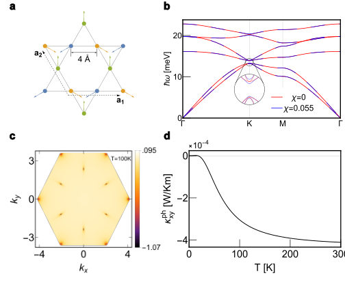
<figcaption class="paper-figure-caption"><b>Fig 1.</b> FIG. 1. Intrinsic phonon thermal Hall effect in the kagome Mott insulator. (a) Kagome lattice geometry with a canted antiferromagnetic order. The 10◦out-of-plane cant- ing yields a uniform scalar spin chirality χ = 0.055. (b) Phonon band structure. Solid red curves denote the unper- turbed dispersion (χ = 0); dashed blue curves incorporate the emergent gauge field (t/J = 0.3, γ = 4 ˚A−1). Calculations assume an interatomic spacing 4 ˚A, nuclear mass 10−25 kg, and longitudinal/transverse spring constants 20 N/m and 10 N/m, respectively. (c) Momentum-resolved thermal Hall con- ductivity integrand evaluated at T = 100 K. (d) Macroscopic thermal Hall conductivity κph xy as a function of...</figcaption>
</figure>
<figure class="paper-figure-card">
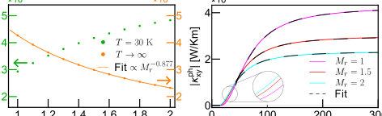
<figcaption class="paper-figure-caption"><b>Fig 2.</b> FIG. 2. Isotope effect and mass scaling. (a) Absolute value of thermal Hall conductivity as a function of the rela- tive isotopic mass Mr. At low temperatures (T = 30 K, green dots, left axis), heavier masses enhance the transport, whereas in the high-temperature limit (orange dots, right axis), the macroscopic signal is strictly suppressed. The solid orange line indicates a power-law fit κph xy ∝M −0.877 r . (b) Temper- ature dependence of |κph xy| for Mr = 1 (magenta), 1.5 (red), and 2 (cyan). The dotted lines are fits to the ansatz [Eq. (15)] over the range 43 K ≤T ≤300 K.</figcaption>
</figure>
</div>

<p><strong>Summary.</strong> This work establishes a fully microscopic theory for the Phonon Thermal Hall Effect in chiral Mott insulators. By deriving the effect from an emergent gauge field linked to spin chirality, the authors propose a definitive experimental protocol using isotopic substitution. This allows researchers to cleanly separate the phonon contribution to thermal transport from other background electronic signals.</p>
<p><strong>Why it may be interesting.</strong> The rigorous derivation of the PTHE links lattice vibrations (phonons) directly to electronic magnetic order (spin chirality) via emergent gauge fields, providing a powerful new diagnostic tool for strongly correlated materials.</p>
<details>
<summary>Detailed structure</summary>
<p><strong>Main problem.</strong> The paper develops a microscopic theory for the Phonon Thermal Hall Effect (PTHE) in chiral Mott insulators, aiming to provide a definitive method to isolate this phonon contribution.</p>
<p><strong>Main result.</strong> The PTHE is shown to be governed by an emergent gauge field, which is proportional to the scalar spin chirality, and its signal can be quantitatively separated using isotopic substitution and a derived scaling law.</p>
<p><strong>Method.</strong> The theory employs advanced many-body techniques, including inverse Schrieffer-Wolff perturbation theory, Born-Oppenheimer approximations, and the calculation of Abelian phonon Berry curvature using projector formalisms.</p>
<p><strong>Model / system.</strong> The study focuses on chiral Mott insulators, modeled using the double exchange Hamiltonian at half-filling, and specifically investigates the 2D kagome lattice.</p>
<p><strong>Key observables.</strong> Phonon thermal Hall conductivity ($\kappa_{ph}^{\mu
u}$), emergent gauge field ($F_{em}^{ab}$), and the temperature/mass dependence of $\kappa_{ph}^{\mu
u}$.</p>
<p><strong>Important parameters / regimes.</strong> Scalar spin chirality ($\chi_{ijk}$), temperature ($T$), and isotopic mass ratio ($M_r$).</p>
<p><strong>Assumptions / limitations.</strong> The calculation assumes hopping amplitudes depend only on inter-atomic displacement, and the method relies on the Born-Oppenheimer approximation for separating electron and nuclear dynamics.</p>
<p><strong>Figures summary.</strong> Figures illustrate the intrinsic PTHE in the kagome model, showing band structure changes and the temperature dependence of $\kappa_{ph}^{xy}(T)$, and demonstrate the isotope effect where $\kappa_{ph}^{xy}$ changes dependence on $M_r$ at low vs. high temperatures.</p>
<p><strong>Paper structure.</strong> The paper progresses from deriving the effective lattice Hamiltonian via BO approximation, calculating the emergent gauge field via perturbation theory, and finally establishing the experimental protocol using isotopic substitution and scaling laws to isolate the pure PTHE signal.</p>
</details>
<details>
<summary>Abstract</summary>
<p>The thermal Hall effect (THE) probes charge-neutral excitations in insulators, where the charge gap blocks electronic transport. Recently, phonons have been shown to induce a THE comparable in magnitude to the spin contribution, underscoring their critical role in thermal transport. Here, we develop a microscopic theory of the phonon thermal Hall effect (PTHE) in chiral Mott insulators. First, we derive the exact analytic form of the effective Raman interaction in half-filled Mott insulators, showing that its strength is directly proportional to the scalar spin chirality. Next, we demonstrate the intrinsic PTHE explicitly on the kagome lattice. Crucially, our formulation reveals a temperature-dependent crossover in the transport behavior under isotopic substitution. Using this result, we establish a scaling law that quantitatively separates the phonon contribution to the THE from other background signals. Our results not only provide the first fully microscopic derivation of the PTHE, but also establish a definitive experimental standard for isolating microscopic heat carriers in chiral Mott insulators.</p>
</details>
<p><sub><a href="#top">↑ back to top</a></sub></p>

<p><a id="paper-2606.01029"></a></p>
<h3 id="wilson-holonomy-and-spectral-monodromy-in-spin-orbit-rings-effective-gauge-connections-and-loop-observables"><a href="http://arxiv.org/abs/2606.01029v1">Wilson Holonomy and Spectral Monodromy in Spin-Orbit Rings: Effective Gauge Connections and Loop Observables</a></h3>
<p><strong>Authors:</strong> N. Bolivar<br>
<strong>Type:</strong> theory · <strong>Category:</strong> other · <strong>PDF:</strong> <a href="https://arxiv.org/pdf/2606.01029v1">https://arxiv.org/pdf/2606.01029v1</a><br>
<strong>Analysis basis:</strong> full PDF text, analyzed in chunks
<strong>Topic relevance:</strong> <code>analog quantum simulation</code> <strong>2/5</strong> · <code>interference shaping light</code> <strong>1/5</strong> · <code>non-equilibrium dynamics</code> <strong>1/5</strong></p>
<div class="figure-strip-hint">↔ Scroll figures horizontally</div>
<div class="paper-figures-scroll">
<figure class="paper-figure-card">
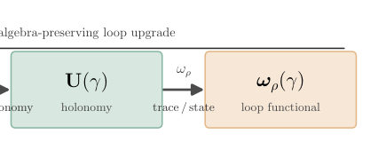
<figcaption class="paper-figure-caption"><b>Fig 1.</b> Figure 1: (Color online) Two-stage upgrade from the SOC Hamiltonian to effective connection data, then to holonomy and loop functionals. The second step preserves path composition and the ∗-structure.</figcaption>
</figure>
<figure class="paper-figure-card">
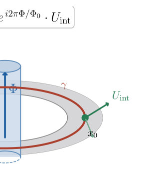
<figcaption class="paper-figure-caption"><b>Fig 2.</b> Figure 2: (Color online) Ring holonomy factorization. The AB sector contributes a central phase, while SOC induces internal transport based at x0. When the U(1) factor is central, the total loop datum factorizes as Utot(Φ) = ei2πΦ/Φ0 Uint.</figcaption>
</figure>
<figure class="paper-figure-card">
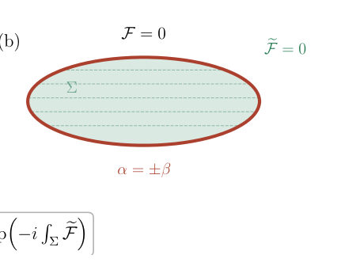
<figcaption class="paper-figure-caption"><b>Fig 3.</b> Figure 3: (Color online) Surface lift of the Wilson loop. The loop holonomy is rewrit- ten as a surface-ordered exponential of transported curvature. The RD locus α = ±β is a pure-gauge checkpoint with vanishing curvature. [11,18]</figcaption>
</figure>
<figure class="paper-figure-card">
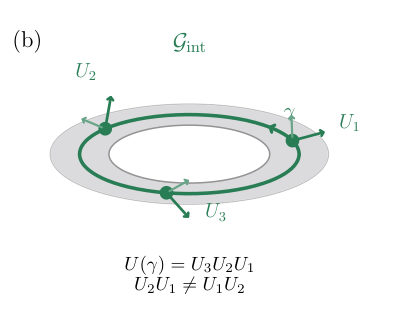
<figcaption class="paper-figure-caption"><b>Fig 4.</b> Figure 4: (Color online) Abelian versus non-Abelian transport around the same loop. The U(1) sector reduces to a scalar phase, whereas the internal non-Abelian sector is an ordered product of segment propagators.</figcaption>
</figure>
<figure class="paper-figure-card">
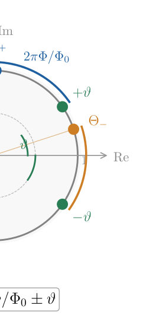
<figcaption class="paper-figure-caption"><b>Fig 5.</b> Figure 5: (Color online) Eigenphase representation of the conjugacy class. Internal phases ±ϑ are shifted by the central AB contribution, yielding total phases Θ±.</figcaption>
</figure>
</div>

<p><strong>Summary.</strong> This work develops a rigorous gauge-theoretic framework to analyze spin-orbit coupling in quantum rings. It achieves a crucial separation between the energy-independent Wilson holonomy, which governs interference, and the energy-dependent monodromy, which dictates spectral quantization. The methodology successfully maps complex SOC Hamiltonians onto computable loop observables, providing deep insights into spin-dependent transport.</p>
<p><strong>Why it may be interesting.</strong> It provides a powerful, general mathematical machinery (loop/holonomy algebra) to analyze complex quantum transport phenomena in condensed matter systems, linking topology to measurable spectral properties.</p>
<details>
<summary>Detailed structure</summary>
<p><strong>Main problem.</strong> To construct a precise, computable bridge between the loop/holonomy representation of gauge theories and condensed-matter spin-orbit transport in quantum rings.</p>
<p><strong>Main result.</strong> The paper successfully separates the energy-independent Wilson holonomy (governing interference) from the energy-dependent monodromy (quantizing the spectrum), providing a unified framework for SOC systems.</p>
<p><strong>Method.</strong> The analysis involves mapping the SOC Hamiltonian to an effective $U(1) \oplus A_{	ext{int}}$ connection, reducing the problem to a first-order transport equation, and analyzing the resulting loop operators.</p>
<p><strong>Model / system.</strong> The primary models are spin-orbit coupled quantum rings, specifically analyzing Dirac (graphene) rings with Aharonov-Bohm flux and Rashba-Dresselhaus rings exhibiting non-Abelian $SU(2)$ transport.</p>
<p><strong>Key observables.</strong> Wilson holonomy, spectral monodromy, curvature, and eigenphases.</p>
<p><strong>Important parameters / regimes.</strong> Rashba coupling ($\alpha$), Dresselhaus coupling ($eta$), Aharonov-Bohm flux ($\Phi$), and the pure-gauge locus ($\alpha = \pm eta$).</p>
<p><strong>Assumptions / limitations.</strong> The non-Abelian Stokes theorem and Magnus expansion are used as diagnostic tools, and the spectral quantization condition is derived from the monodromy operator, distinct from the holonomy.</p>
<p><strong>Figures summary.</strong> Figures illustrate the factorization of the total holonomy into Abelian and internal parts for the graphene ring, and show the non-vanishing curvature of the internal connection for generic SOC parameters.</p>
<p><strong>Paper structure.</strong> The paper systematically develops the gauge theory formalism, first establishing the separation of holonomy and monodromy, then applying this to the Dirac ring (factorization), and finally tackling the non-Abelian case (Rashba-Dresselhaus) using first-order reduction and curvature diagnostics.</p>
</details>
<details>
<summary>Abstract</summary>
<p>A spin-orbit Hamiltonian with an effective gauge structure carries two distinct loop objects that are routinely conflated: an energy-independent Wilson holonomy, which organizes interference and internal spin transport, and an energy-dependent monodromy, which quantizes the spectrum. We show that cleanly separating these objects supplies a precise, computable bridge between the loop/holonomy representation of gauge theories and condensed-matter spin-orbit transport. The construction maps a spin-orbit Hamiltonian to an effective $U(1)$ plus internal non-Abelian connection, reduces it to a first-order transport problem, and reads physical predictions from holonomy, monodromy, curvature, and eigenphase data. Two rings make the separation explicit. For a Dirac (graphene) ring with Rashba coupling and Aharonov-Bohm flux, the total holonomy factorizes exactly into a commuting $U(1)$ flux phase times an internal spin/pseudospin holonomy, and the spectrum follows from a holonomy-eigenvalue condition. For a Rashba-Dresselhaus ring, the internal $SU(2)$ transport is genuinely non-Abelian away from the $α=\pmβ$ pure-gauge locus, where curvature controls path ordering; spectral quantization then requires an explicit first-order reduction obtained by phase-space doubling of the second-order Schrödinger problem. A non-Abelian Stokes formulation and Magnus expansion serve as ordering diagnostics rather than spectral tools. Spin-network ideas enter only as historical geometric motivation, not as a dynamical import into spintronics.</p>
</details>
<p><sub><a href="#top">↑ back to top</a></sub></p>

<p><a id="paper-2606.00854"></a></p>
<h3 id="three-and-four-boson-systems-expanded-around-the-unitarity-limit-application-to-math864mathhe"><a href="http://arxiv.org/abs/2606.00854v1">Three- and four-boson systems expanded around the unitarity limit: Application to $^4$He</a></h3>
<p><strong>Authors:</strong> Feng Wu, Xincheng Lin, Ubirajara van Kolck, Sebastian König<br>
<strong>Type:</strong> theory · <strong>Category:</strong> quantum gases · <strong>PDF:</strong> <a href="https://arxiv.org/pdf/2606.00854v1">https://arxiv.org/pdf/2606.00854v1</a><br>
<strong>Analysis basis:</strong> full PDF text, analyzed in chunks
<strong>Topic relevance:</strong> <code>Keldysh / 2PI / non-Gaussian methods</code> <strong>2/5</strong> · <code>analog quantum simulation</code> <strong>1/5</strong></p>
<div class="figure-strip-hint">↔ Scroll figures horizontally</div>
<div class="paper-figures-scroll">
<figure class="paper-figure-card">
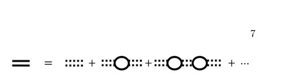
<figcaption class="paper-figure-caption"><b>Fig 1.</b> Figure 1. Dressed dimer propagator (double solid line) as a sum of bare dimer propagators (double dotted lines) with insertions of loops with boson propagators (single solid lines).</figcaption>
</figure>
<figure class="paper-figure-card">
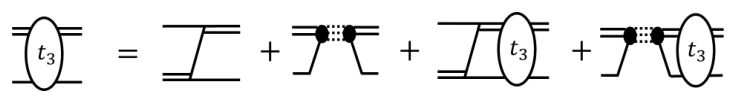
<figcaption class="paper-figure-caption"><b>Fig 2.</b> Figure 2. Diagrammatic representation of the integral equation for the boson-dimer amplitude t3. The bare trimer propagator is represented by a triple dotted line. Other lines as in Fig. 1.</figcaption>
</figure>
<figure class="paper-figure-card">
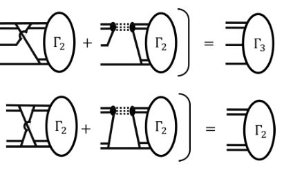
<figcaption class="paper-figure-caption"><b>Fig 3.</b> Figure 3. Diagrammatic representation of the four-body integral equations. Lines as in Figs. 1 and 2.</figcaption>
</figure>
<figure class="paper-figure-card">
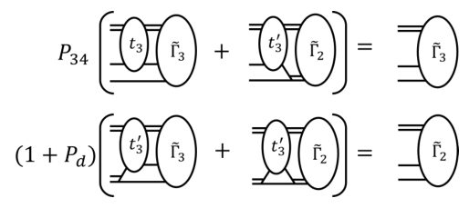
<figcaption class="paper-figure-caption"><b>Fig 4.</b> Figure 4. Diagrammatic representation of the four-body in- tegral equations in terms of three-body amplitudes t3 and t′ 3. Both single-boson legs attached to t3 are on-shell, whereas for t′ 3 only the single-boson leg on the side of the (3+1) fragmen- tation is on-shell [35]. Lines as in Figs. 1 and 2.</figcaption>
</figure>
<figure class="paper-figure-card">
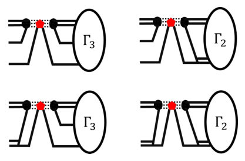
<figcaption class="paper-figure-caption"><b>Fig 5.</b> Figure 5. Contributions of the four-body force g4, represented by a red pentagon, in the diagrammatic four-body integral equation depicted in Fig. 3.</figcaption>
</figure>
</div>

<p><strong>Summary.</strong> This paper develops a rigorous Effective Field Theory framework to study three- and four-boson systems near the unitarity limit, applying it to $^4$He. By systematically calculating corrections beyond the leading order, the authors show that the resulting binding energies and radii match established phenomenological results, confirming the underlying physics is robustly described by small deviations from scale invariance.</p>
<p><strong>Why it may be interesting.</strong> This work provides a highly systematic, quantum-field-theoretic approach to few-body physics, which is crucial for understanding ultracold atomic gases tuned near Feshbach resonances (unitarity limit).</p>
<details>
<summary>Detailed structure</summary>
<p><strong>Main problem.</strong> The study investigates three- and four-boson systems near the unitarity limit, applying the theoretical framework to the Helium-4 ($^4$He) system.</p>
<p><strong>Main result.</strong> The binding energies and radii of $^4$He three- and four-atom systems calculated using the EFT approach converge well with sophisticated phenomenological potentials, suggesting the physics is governed by small deviations from discrete scale invariance.</p>
<p><strong>Method.</strong> The authors employ Short-Range Effective Field Theory (SREFT) combined with the Faddeev-Yakubovsky formalism and diagrammatic techniques to systematically calculate corrections beyond the leading-order unitarity limit.</p>
<p><strong>Model / system.</strong> The system consists of three- and four-boson interactions, modeled using an EFT Lagrangian. The calculations are performed by systematically including corrections from finite scattering lengths and effective ranges, necessitating the introduction of four-body forces at next-to-leading order.</p>
<p><strong>Key observables.</strong> Binding energies ($B_3, B_4$) and radii ($r_3, r_4$) of the few-boson clusters.</p>
<p><strong>Important parameters / regimes.</strong> The unitarity limit, the three-body scale parameter ($\Lambda_{\star}$), the two-body scattering length ($a$), and the effective range ($r_2$).</p>
<p><strong>Assumptions / limitations.</strong> The analysis assumes that the physics is dominated by small deviations from discrete scale invariance, allowing for a systematic perturbative expansion around the unitarity limit.</p>
<p><strong>Figures summary.</strong> Figures compare the tetramer ground-state binding energy and radius against the regulator cutoff ($\Lambda/\kappa_{3,0}$) using different angular momentum cutoffs ($l_{max}$) and theoretical orders (LO/NLO), demonstrating convergence.</p>
<p><strong>Paper structure.</strong> The paper systematically builds the theory from the two-body sector (Lippmann-Schwinger) to the three-body (Faddeev) and four-body (FY) equations, detailing the necessary renormalization procedures and the removal of deep trimer states via pseudopotential projection.</p>
</details>
<details>
<summary>Abstract</summary>
<p>The three- and four-boson systems with a large scattering length and a short effective range in the two-body sector are studied in the framework of Short-Range Effective Field Theory. The starting point (leading order) of the EFT is taken to be the universal unitarity limit, where the two-body sector is parameter-free and only one three-body parameter enters. In this limit, physical systems manifests discrete scale invariance. Deviations from universality arising from finite scattering-length and effective-range corrections, as well as a four-body force required by renormalization, are included perturbatively at next-to-leading order. The three-body ground state and its associated four-body ground and first-excited states are studied using the Faddeev-Yakubovsky formalism and a complementary diagrammatic approach. By employing techniques to remove contributions from deep trimers in tetramer calculations, we extend our analysis to larger cutoffs than previously accessible within the FY approach. Our results for binding energies and radii of $^4$He three- and four-atom systems converge well to results obtained with sophisticated phenomenological potentials. These successes suggest that the physics of $^4$He atomic clusters is governed by only small deviations from discrete scale invariance.</p>
</details>
<p><sub><a href="#top">↑ back to top</a></sub></p>

<p><a id="paper-2606.01647"></a></p>
<h3 id="extensible-fluxonium-architecture-using-tunable-couplers-with-low-shunt-capacitance"><a href="http://arxiv.org/abs/2606.01647v1">Extensible Fluxonium Architecture Using Tunable Couplers with Low Shunt Capacitance</a></h3>
<p><strong>Authors:</strong> Peng Zhao, Peng Xu, Zheng-Yuan Xue<br>
<strong>Type:</strong> theory · <strong>Category:</strong> quantum information and computing · <strong>PDF:</strong> <a href="https://arxiv.org/pdf/2606.01647v1">https://arxiv.org/pdf/2606.01647v1</a><br>
<strong>Analysis basis:</strong> full PDF text, analyzed in chunks
<strong>Topic relevance:</strong> <code>QC/QI experiment</code> <strong>2/5</strong></p>
<div class="figure-strip-hint">↔ Scroll figures horizontally</div>
<div class="paper-figures-scroll">
<figure class="paper-figure-card">
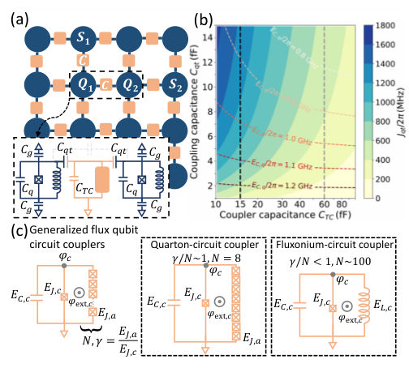
<figcaption class="paper-figure-caption"><b>Fig 1.</b> FIG. 1. (a) A 2D square lattice comprising fluxonium qubits (circles) coupled via couplers (squares). The inset depicts a tunable capacitive coupling architecture, where qubits are capacitively coupled (Cqt) to a tunable coupler with shunt ca- pacitance CT C. (b) Coupling energies Jqt (filled contours) and qubit charging energies EC,q (dashed contours) as functions of the coupling capacitance Cqt and the coupler capacitance CT C for the unit cell. The unit cell consists of two floating fluxonium qubits [Cq (g) = 7 (13) fF] coupled via a grounded coupler, embedded in the 2D lattice shown in (a). The verti- cal dashed grey and black lines mark, respectively, the typical shunt capacitances for...</figcaption>
</figure>
<figure class="paper-figure-card">
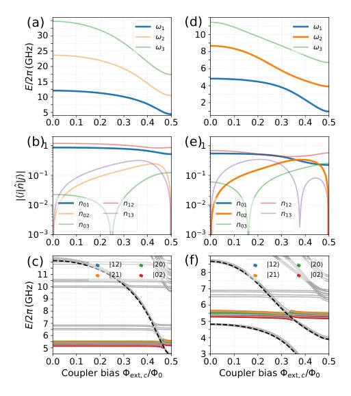
<figcaption class="paper-figure-caption"><b>Fig 2.</b> FIG. 2. (a) Energy levels of the quarton coupler, (b) magni- tudes of the electric transition dipole moments for the quarton transitions, and (c) full energy levels of the coupled system consisting of two fluxonium qubits coupled via the quarton coupler, versus coupler flux bias. The noncomputational en- ergy levels {|20⟩, |02⟩, |21⟩, |12⟩} associated with the plasmon transition |1⟩↔|2⟩, together with the bare coupler frequency [black dashed lines, as in (a)], are highlighted. (d)–(f) Corre- sponding results for the fluxonium-circuit coupler.</figcaption>
</figure>
<figure class="paper-figure-card">
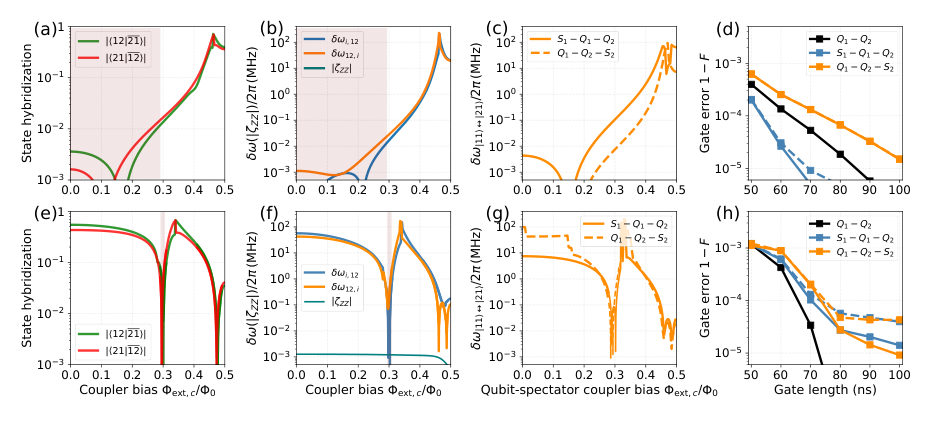
<figcaption class="paper-figure-caption"><b>Fig 3.</b> FIG. 3. (a) State hybridization and (b) state-dependent frequency shift of the transition |1⟩↔|2⟩versus coupler bias, for fluxonium qubits Q1 and Q2 coupled via the quarton-circuit coupler. The shaded region marks the bias range where plasmon interactions are strongly suppressed. (c) Frequency shift in the gate transition |11⟩↔|21⟩induced by residual spectator- qubit coupling, controlled by the flux bias applied to the qubit-spectator coupler. Solid and dashed lines correspond to the configurations S1 −Q1 −Q2 and Q1 −Q2 −S2, respectively [see Fig. 1(a)]. (d) CZ gate errors for Q1 and Q2 in the two three-qubit systems as a function of gate length. Solid and dashed lines correspond to the...</figcaption>
</figure>
</div>

<p><strong>Summary.</strong> This paper presents an extensible architecture for scaling fluxonium qubits into large 2D arrays by employing low-shunt-capacitance tunable couplers. The proposed couplers, based on quarton and fluxonium circuits, overcome limitations in coupling strength and capacitance loading inherent to small-footprint qubits. This design successfully enables strong, tunable interactions while actively suppressing error sources to support practical quantum processors.</p>
<p><strong>Why it may be interesting.</strong> This work directly addresses the physical implementation challenges of scaling superconducting qubits, which is a major focus area for quantum information scientists working on solid-state quantum hardware.</p>
<details>
<summary>Detailed structure</summary>
<p><strong>Main problem.</strong> The central challenge is scaling fluxonium qubits into large, high-performance 2D arrays while maintaining controllable strong interactions despite the small physical footprint of the qubits.</p>
<p><strong>Main result.</strong> The authors propose using low-shunt-capacitance tunable couplers based on quarton and fluxonium circuits, enabling strong, tunable coupling and suppressing spectator-induced errors for 2D grid integration.</p>
<p><strong>Method.</strong> The work involves theoretical modeling of coupled superconducting circuits, deriving Hamiltonians for the system, and analyzing coupling strengths and error sources.</p>
<p><strong>Model / system.</strong> The system utilizes fluxonium qubits coupled via tunable couplers realized using generalized flux-qubit circuits (quarton and fluxonium). The Hamiltonian describes the interaction between multiple qubits and couplers in a 2D lattice.</p>
<p><strong>Key observables.</strong> Gate fidelity, coupling strength ($g_{qt}$), spectator-induced frequency shifts, and the ability to tune interactions on/off.</p>
<p><strong>Important parameters / regimes.</strong> Low shunt capacitance ($C_{qt}$), charging energy ($E_C$), Josephson energy ($E_J$), and the ratio of coupling to qubit capacitance.</p>
<p><strong>Assumptions / limitations.</strong> The analysis assumes that the computational subspace remains nearly decoupled from the coupler's non-computational states when interactions are turned off.</p>
<p><strong>Figures summary.</strong> Figures illustrate the 2D lattice structure, the coupler circuit, energy level diagrams showing tunability, and plots demonstrating the suppression of gate frequency shifts and errors.</p>
<p><strong>Paper structure.</strong> The paper introduces the scaling problem, proposes the low-shunt-capacitance coupler architecture, derives the relevant Hamiltonians, analyzes the coupling mechanisms (including plasmon interactions), and concludes by demonstrating error suppression and scalability for 2D arrays.</p>
</details>
<details>
<summary>Abstract</summary>
<p>Fluxonium qubits have demonstrated high-fidelity operations and long coherence times in small-scale systems, highlighting their promise for quantum computing. However, large-scale integration into a high-performance two-dimensional (2D) qubit array remains the central challenge for practical applications. In this work, we introduce an extensible architecture for scaling up fluxonium qubits in 2D grids. To address the key challenges, namely achieving controllable strong interaction and high connectivity for qubits featuring small shunting capacitors (footprints), we propose using low-shunt-capacitance couplers to enable tunable interactions between fluxonium qubits. When embedded into 2D square lattices, large couplings can be achieved even with relatively small coupling capacitances, thus enabling multiple connections with sufficient capacitance budget. We further propose coupler realizations based on generalized flux qubit circuits, specifically the quarton and the fluxonium, and demonstrate that both enable fast, high-fidelity gates with low spectator errors, while supporting multiple connections on 2D grids.</p>
</details>
<p><sub><a href="#top">↑ back to top</a></sub></p>

<p><a id="paper-2606.01922"></a></p>
<h3 id="half-the-interference-most-of-the-answer-approximate-quantum-simulation-via-path-sum-pruning"><a href="http://arxiv.org/abs/2606.01922v1">Half the Interference, Most of the Answer: Approximate Quantum Simulation via Path-Sum Pruning</a></h3>
<p><strong>Authors:</strong> Sinan Pehlivanoglu, Srinivasan Iyengar, Amr Sabry<br>
<strong>Type:</strong> theory · <strong>Category:</strong> numerical methods · <strong>PDF:</strong> <a href="https://arxiv.org/pdf/2606.01922v1">https://arxiv.org/pdf/2606.01922v1</a><br>
<strong>Analysis basis:</strong> full PDF text, analyzed in chunks
<strong>Topic relevance:</strong> <code>methods for driven-dissipative</code> <strong>2/5</strong></p>
<div class="figure-strip-hint">↔ Scroll figures horizontally</div>
<div class="paper-figures-scroll">
<figure class="paper-figure-card">
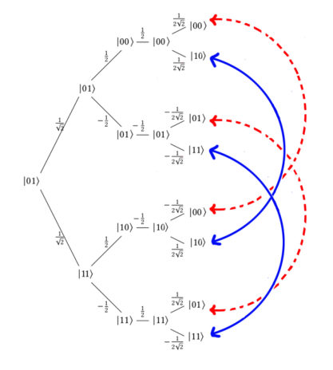
<figcaption class="paper-figure-caption"><b>Fig 1.</b> Figure 2: An abstract view of the ChAM model</figcaption>
</figure>
<figure class="paper-figure-card">
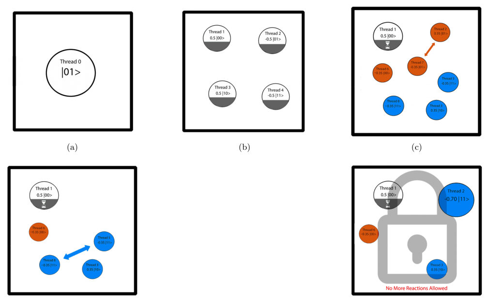
<figcaption class="paper-figure-caption"><b>Fig 2.</b> Figure 3: Evolution of the chemical solution system throughout quantum interference simulation. Each panel represents a key transformation step: (a) Initial state, (b) Hadamard gate application, (c) Destructive interference of |01⟩, (d) Constructive interference preparation for |11⟩, and (e) Final state before sampling.</figcaption>
</figure>
<figure class="paper-figure-card">
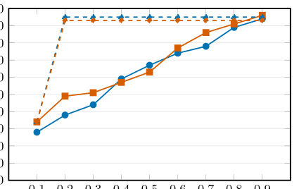
<figcaption class="paper-figure-caption"><b>Fig 3.</b> Figure 4: Fraction of runs in which the thresholded simulation returns the correct output for tagged-state and 3-SAT Grover instances across a range of threshold values. Dashed curves correspond to the early-selection variant.</figcaption>
</figure>
<figure class="paper-figure-card">
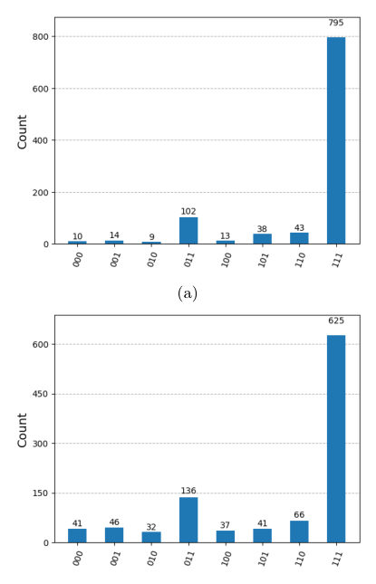
<figcaption class="paper-figure-caption"><b>Fig 4.</b> Figure 5: Sampling counts for Grover’s algorithm with tagged state |111⟩on the IBM Brisbane machine: (a) two iterations and (b) a single iteration.</figcaption>
</figure>
<figure class="paper-figure-card">
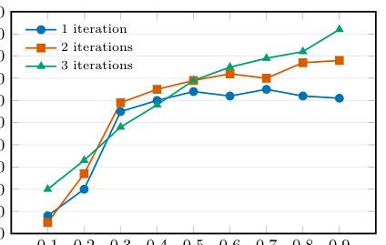
<figcaption class="paper-figure-caption"><b>Fig 5.</b> Figure 6: Percentage of runs in which partial accumulation with threshold T produced the correct result under one, two, and three reduced iterations of Grover’s algorithm.</figcaption>
</figure>
</div>

<p><strong>Summary.</strong> This work proposes a novel approximation technique called statistical interference sampling to tackle the computational bottleneck of quantum interference in circuit simulation. By modeling interference explicitly and introducing a threshold rule, the authors demonstrate that significant portions of the interference calculation can be safely pruned. This suggests that interference arithmetic is a structured resource amenable to targeted approximation strategies.</p>
<p><strong>Why it may be interesting.</strong> The explicit separation and approximation of interference arithmetic provide a novel, structured resource that can be pruned, offering insights applicable to path-sum and tensor-network simulation techniques.</p>
<details>
<summary>Detailed structure</summary>
<p><strong>Main problem.</strong> Classical simulation of quantum circuits is computationally expensive due to the exponential state-space size and the high cost associated with coherently combining many computational histories (interference).</p>
<p><strong>Main result.</strong> The proposed method can omit nearly 50% of the endpoint interference work while retaining over 90% output accuracy for benchmark quantum algorithms.</p>
<p><strong>Method.</strong> It introduces statistical interference sampling, treating endpoint interference as a separately schedulable computation using a Chemical Abstract Machine (ChAM) model and employing a threshold rule for early termination.</p>
<p><strong>Model / system.</strong> The simulation models quantum circuits using a path-integral formulation, where weighted path contributions evolve like concurrent molecular species undergoing time evolution, tagging, and interference reactions.</p>
<p><strong>Key observables.</strong> Output distribution, output accuracy, and the fraction of omitted endpoint interference work.</p>
<p><strong>Important parameters / regimes.</strong> The threshold parameter T, which dictates when the simulation halts based on accumulated amplitude.</p>
<p><strong>Assumptions / limitations.</strong> The method does not improve worst-case complexity, and the formal error analysis assumes a uniform random arrival order for path contributions.</p>
<p><strong>Figures summary.</strong> Figures illustrate the Deutsch-Jozsa circuit, the ChAM model structure, and concrete execution traces showing the benefit and error associated with early termination.</p>
<p><strong>Paper structure.</strong> The paper first identifies the two bottlenecks (state-space and interference), introduces the ChAM model and statistical interference sampling, demonstrates its application to benchmark circuits (Deutsch-Jozsa, Grover, Simon, Shor), and concludes with a formal analysis of error bounds.</p>
</details>
<details>
<summary>Abstract</summary>
<p>Classical simulation of quantum circuits is expensive for two distinct reasons. The obvious one is state-space size: an n-qubit system requires exponentially many amplitudes. The less obvious one is interference: useful output distributions emerge only after many computational histories have been coherently combined at common endpoints, and this aggregation step is itself a substantial source of cost. We introduce statistical interference sampling, a framework that makes this second bottleneck explicit by treating endpoint interference as a separately schedulable computation. Using the Chemical Abstract Machine (ChAM) as our model, weighted path contributions evolve as concurrent molecular species, and interference reactions combine contributions that share a common output state. A threshold rule terminates the process once an endpoint accumulates sufficient amplitude, discarding the remaining reactions. The method does not improve worst-case complexity and is not intended as a general-purpose simulator. Its purpose is to ask a more targeted question: how much of the interference calculation can be skipped while still recovering a useful output distribution? On benchmark circuits for Deutsch-Jozsa, Grover search, Simon's problem, and small Shor period-finding instances, we find that nearly 50% of endpoint interference reactions can be omitted while maintaining over 90% output accuracy for most algorithms tested. These results suggest that interference arithmetic is a structured resource that admits meaningful approximation, and that exposing it explicitly opens new opportunities for pruning strategies across path-sum, Pauli-path, and tensor-network simulation methods.</p>
</details>
<p><sub><a href="#top">↑ back to top</a></sub></p>

<p><a id="paper-2606.02323"></a></p>
<h3 id="multidimensional-reconciliation-in-continuous-variable-qkd-review-coding-schemes-and-open-source-simulation"><a href="http://arxiv.org/abs/2606.02323v1">Multidimensional Reconciliation in Continuous-Variable QKD: Review, Coding Schemes, and Open Source Simulation</a></h3>
<p><strong>Authors:</strong> Martial Lucien, Rosio Alexis, Diamanti Eleni, Cassagne Adrien, Gouraud Baptiste<br>
<strong>Type:</strong> theory · <strong>Category:</strong> quantum information and computing · <strong>PDF:</strong> <a href="https://arxiv.org/pdf/2606.02323v1">https://arxiv.org/pdf/2606.02323v1</a><br>
<strong>Analysis basis:</strong> full PDF text, analyzed in chunks
<strong>Topic relevance:</strong> <code>entanglement &amp; information structure</code> <strong>2/5</strong></p>
<div class="figure-strip-hint">↔ Scroll figures horizontally</div>
<div class="paper-figures-scroll">
<figure class="paper-figure-card">
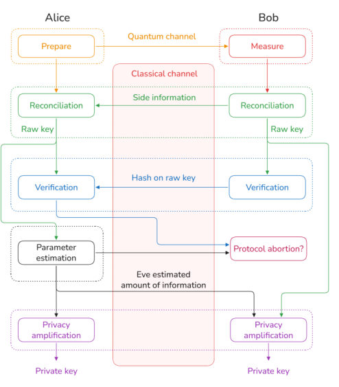
<figcaption class="paper-figure-caption"><b>Fig 1.</b> Figure 1: Overview of the general steps of a prepare-and- measure QKD protocol.</figcaption>
</figure>
<figure class="paper-figure-card">
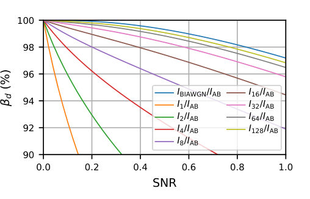
<figcaption class="paper-figure-caption"><b>Fig 2.</b> Figure 2: Intrinsic reconciliation efficiency of the virtual channel as a function of SNR.</figcaption>
</figure>
<figure class="paper-figure-card">
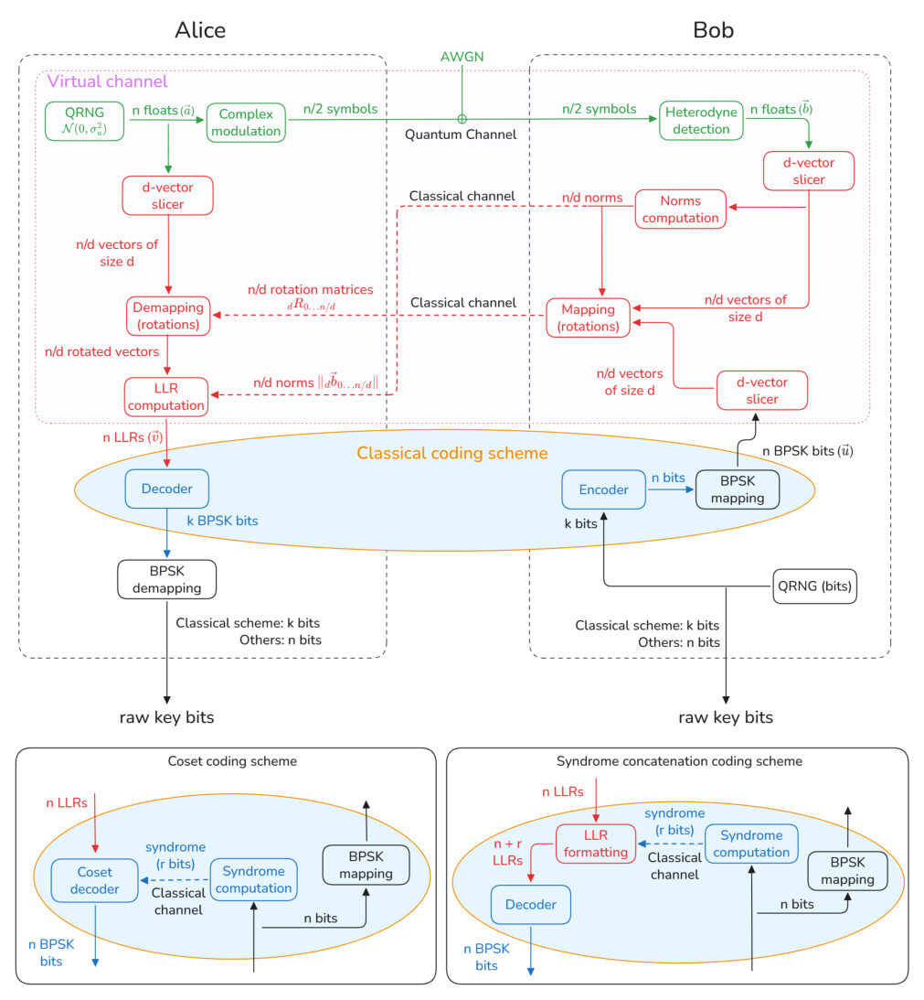
<figcaption class="paper-figure-caption"><b>Fig 3.</b> Figure 3: Linear block coding schemes for multidimensional reverse reconciliation. The physical layer (prepare and measure steps of the protocol) is highlighted in green, the multidimensional mapping in red, (virtual) channel coding in blue, and bit generation/mapping in black. QRNG: Quantum Random Number Generator (or any true random number generator). Refer to sections 3 and 4 for a description of the individual components.</figcaption>
</figure>
<figure class="paper-figure-card">
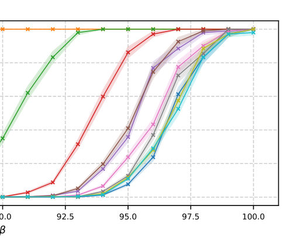
<figcaption class="paper-figure-caption"><b>Fig 4.</b> Figure 4: FER as a function of β for R ≈0.1 (k = 20000, n = 204800) and coset coding.</figcaption>
</figure>
<figure class="paper-figure-card">
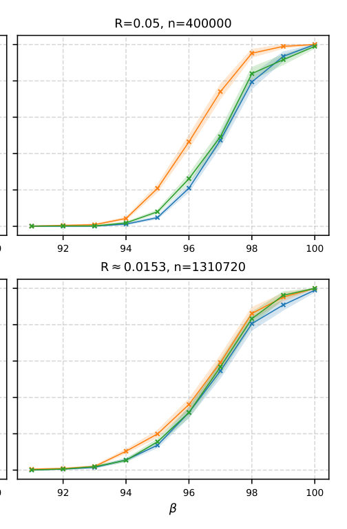
<figcaption class="paper-figure-caption"><b>Fig 5.</b> Figure 5: FER as a function of β for various R, fixed k = 20000 and coset coding.</figcaption>
</figure>
</div>

<p><strong>Summary.</strong> This paper provides a comprehensive review of multidimensional reconciliation for CV-QKD, a critical technique for long-distance quantum key distribution. It details how the physical quantum channel is mapped to a virtual BIAWGN channel, enabling the use of powerful classical error-correcting codes. The work provides practical guidance by analyzing the trade-offs between reconciliation dimension, coding strategy, and achievable key rate.</p>
<p><strong>Why it may be interesting.</strong> While focused on quantum communication, the mathematical machinery—transforming a continuous physical process into a discrete, coded virtual channel—shares conceptual links with advanced quantum error correction codes and information bounding techniques relevant to open quantum systems.</p>
<details>
<summary>Detailed structure</summary>
<p><strong>Main problem.</strong> The core challenge is developing highly efficient reconciliation techniques for Continuous-Variable Quantum Key Distribution (CV-QKD) to maintain a positive secret key rate over long distances and low Signal-to-Noise Ratio (SNR).</p>
<p><strong>Main result.</strong> Multidimensional reconciliation successfully transforms the physical Gaussian quantum channel into a virtual BIAWGN channel, allowing the application of modern error-correcting codes like LDPC codes to achieve high reconciliation efficiency.</p>
<p><strong>Method.</strong> The authors review the theory by mapping the physical channel to a virtual channel in dimension $d$, and then apply advanced classical coding techniques (e.g., Coset Coding) for error correction.</p>
<p><strong>Model / system.</strong> The system is CV-QKD, which encodes information in the quadratures ($\hat{x}, \hat{p}$) of coherent states. The analysis models the channel as linear and lossy, requiring reconciliation to extract the secret key.</p>
<p><strong>Key observables.</strong> Secret Key Rate (SKR), Reconciliation Efficiency ($eta$), Frame Error Rate (FER), and Mutual Information ($I_d$).</p>
<p><strong>Important parameters / regimes.</strong> Dimension ($d$), Signal-to-Noise Ratio (SNR), Code Rate ($R$), and the security parameter ($\epsilon$).</p>
<p><strong>Assumptions / limitations.</strong> The analysis assumes the physical channel can be modeled by an additive white Gaussian noise (AWGN) process, and the security analysis relies on bounding Eve's information.</p>
<p><strong>Figures summary.</strong> Figures illustrate the trade-offs between FER and reconciliation efficiency ($eta$) for different code rates and dimensions, and compare the throughput of different coding schemes (Coset vs. Syndrome-Concatenation).</p>
<p><strong>Paper structure.</strong> The paper progresses from reviewing the necessity of multidimensional reconciliation, detailing the mathematical transformation to the virtual BIAWGN channel, comparing various coding schemes (Coset vs. Syndrome-Concatenation), and finally presenting simulation results using the HDirac framework to guide system design.</p>
</details>
<details>
<summary>Abstract</summary>
<p>Continuous-variable quantum key distribution (CV-QKD) requires highly efficient reconciliation techniques to operate at low signal-to-noise ratios and long distances. Multidimensional reconciliation addresses this challenge by transforming the physical Gaussian quantum channel into a virtual binary-input additive white Gaussian noise (BIAWGN) channel, enabling the use of modern errorcorrecting codes. In this work, we review the principles of multidimensional reconciliation, with a particular focus on high-dimensional constructions beyond the algebraic dimensions 1, 2, 4, 8. We describe the construction of the virtual channel, discuss practical coding schemes for reverse reconciliation, and analyse their integration with linear error-correcting codes. We also present an opensource simulation framework, HDirac, implementing multidimensional reconciliation for arbitrary dimensions, and use it to evaluate state-of-the-art LDPC codes. The results highlight key trade-offs between dimension, reconciliation efficiency, and frame error rate, providing practical guidance for CV-QKD system design.</p>
</details>
<p><sub><a href="#top">↑ back to top</a></sub></p>

<p><a id="paper-2606.02534"></a></p>
<h3 id="reduce-dimensional-quantum-criticality-for-non-fermi-liquids"><a href="http://arxiv.org/abs/2606.02534v1">Reduce dimensional quantum criticality for Non-Fermi liquids</a></h3>
<p><strong>Authors:</strong> Phumudzo T. Rabambi, Mario Solís<br>
<strong>Type:</strong> theory · <strong>Category:</strong> strongly correlated electrons · <strong>PDF:</strong> <a href="https://arxiv.org/pdf/2606.02534v1">https://arxiv.org/pdf/2606.02534v1</a><br>
<strong>Analysis basis:</strong> full PDF text, analyzed in chunks
<strong>Topic relevance:</strong> <code>Keldysh / 2PI / non-Gaussian methods</code> <strong>2/5</strong></p>
<div class="figure-strip-hint">↔ Scroll figures horizontally</div>
<div class="paper-figures-scroll">
<figure class="paper-figure-card">
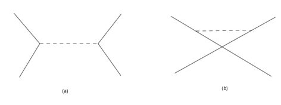
<figcaption class="paper-figure-caption"><b>Fig 1.</b> FIG. 1. Tree-level boson exchange process diagram and 1- loop four-Fermi diagram</figcaption>
</figure>
<figure class="paper-figure-card">
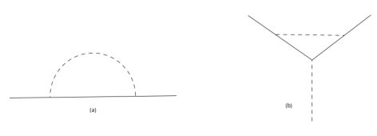
<figcaption class="paper-figure-caption"><b>Fig 2.</b> FIG. 2. 1-loop fermion self energy and 1-loop Yukawa cou- pling</figcaption>
</figure>
</div>

<p><strong>Summary.</strong> This work introduces a reduced-dimension theoretical framework to study Non-Fermi liquid physics near quantum critical points. By spatially separating bosonic and fermionic degrees of freedom, the authors significantly simplify the Renormalization Group analysis. This approach successfully eliminates problematic higher-order divergences, allowing for a controlled perturbative study of strongly correlated electron behavior.</p>
<p><strong>Why it may be interesting.</strong> The technique of dimensional separation to regularize divergences is a powerful theoretical tool applicable to other strongly coupled systems where standard perturbative methods fail.</p>
<details>
<summary>Detailed structure</summary>
<p><strong>Main problem.</strong> The paper addresses the theoretical challenge of understanding Non-Fermi liquid (NFL) behavior near quantum critical points (QCPs) in strongly correlated electronic systems.</p>
<p><strong>Main result.</strong> By employing a reduced-dimension framework where bosons and fermions occupy different spatial dimensions, the authors successfully tame problematic higher-order divergences ($\log^2, \log^3$) found in conventional Renormalization Group (RG) analyses.</p>
<p><strong>Method.</strong> The core method involves dimensional separation of degrees of freedom (bosons in bulk, fermions on a boundary) to simplify the RG analysis of boson-fermion coupling and calculate loop corrections.</p>
<p><strong>Model / system.</strong> The study analyzes quantum field theories at finite density, modeling the breakdown of Landau Fermi liquid theory near a QCP, involving massless bosons coupled to a fermion Fermi surface.</p>
<p><strong>Key observables.</strong> The finiteness of the tree-level boson exchange propagator ($\delta V_0$) and the reduction of 1-loop divergences from $\log^2/\log^3$ to simple logarithms are key diagnostics.</p>
<p><strong>Important parameters / regimes.</strong> The analysis is performed using a perturbative $\epsilon$-expansion in $d = 3 - \epsilon$, focusing on the flow of coupling constants and anomalous dimensions.</p>
<p><strong>Assumptions / limitations.</strong> The analysis assumes a weakly coupled theory and focuses on marginal interactions; it also notes limitations regarding UV-IR mixing and the need for higher-loop calculations.</p>
<p><strong>Figures summary.</strong> Figures illustrate the tree-level boson-mediated scattering process and 1-loop four-fermion coupling diagrams, comparing the conventional approach with the reduced-dimension scheme.</p>
<p><strong>Paper structure.</strong> The paper builds by first identifying the divergence issues in standard treatments, then introducing the reduced-dimension framework, and finally demonstrating through explicit calculations (e.g., for $\delta V_0$ and $\Gamma_4$) that the divergences are controlled, leading to a tractable RG flow analysis.</p>
</details>
<details>
<summary>Abstract</summary>
<p>We present a reduced dimension theoretical framework for studying quantum field theories at finite density, providing a tractable model for investigating non-Fermi liquid (NFL) behavior near quantum phase transitions. Our approach departs from the standard paradigm by placing bosons and fermions in different spatial dimensions: bosonic fields reside in a $(d+1)$-dimensional bulk, while fermionic fields are confined on a $d$-dimensional boundary. This dimensional separation significantly simplifies the renormalization group (RG) analysis of gapless boson-fermion coupling. We demonstrate that the tree-level boson exchange contributions, which typically exhibit logarithmic divergences, become finite in our reduced-dimension scheme. Furthermore, the $\log^2$ and $\log^3$ divergences that characterize 1-loop four-fermion interactions in conventional treatments are reduced to logarithmic divergences within this framework, substantially improving the convergence properties of the perturbative expansion and allowing controlled theoretical analysis of NFL physics.</p>
</details>
<p><sub><a href="#top">↑ back to top</a></sub></p>

<p><a id="paper-2606.00326"></a></p>
<h3 id="on-the-synaptic-matrix-eigenvalues-of-sparsely-connected-neural-networks"><a href="http://arxiv.org/abs/2606.00326v1">On the synaptic matrix eigenvalues of sparsely connected neural networks</a></h3>
<p><strong>Authors:</strong> Mohd. Gayas Ansari, Pragya Shukla<br>
<strong>Type:</strong> theory · <strong>Category:</strong> disordered systems and neural networks · <strong>PDF:</strong> <a href="https://arxiv.org/pdf/2606.00326v1">https://arxiv.org/pdf/2606.00326v1</a><br>
<strong>Analysis basis:</strong> full PDF text, analyzed in chunks
<strong>Topic relevance:</strong> <code>Keldysh / 2PI / non-Gaussian methods</code> <strong>1/5</strong> · <code>analog quantum simulation</code> <strong>1/5</strong> · <code>driven-dissipative phase transition</code> <strong>1/5</strong> · <code>methods for driven-dissipative</code> <strong>1/5</strong> · <code>non-equilibrium dynamics</code> <strong>1/5</strong> · <code>non-equilibrium universality</code> <strong>1/5</strong></p>
<div class="figure-strip-hint">↔ Scroll figures horizontally</div>
<div class="paper-figures-scroll">
<figure class="paper-figure-card">
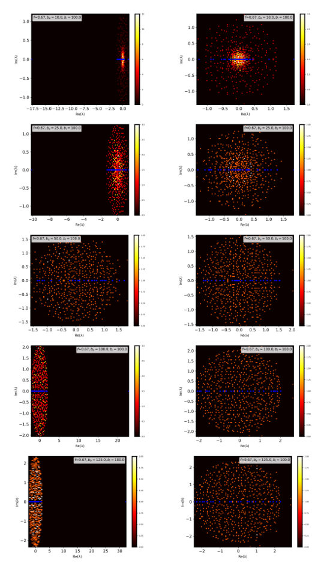
<figcaption class="paper-figure-caption"><b>Fig 1.</b> Figure 1: Eigenvalue density spectra for the UCE (constant variance) model of a random</figcaption>
</figure>
<figure class="paper-figure-card">
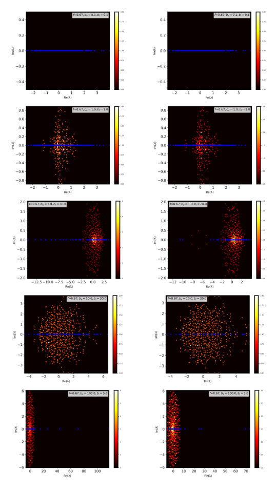
<figcaption class="paper-figure-caption"><b>Fig 2.</b> Figure 2: Eigenvalue density spectra for the PCE (Power-Law Decay) model of a synaptic</figcaption>
</figure>
<figure class="paper-figure-card">
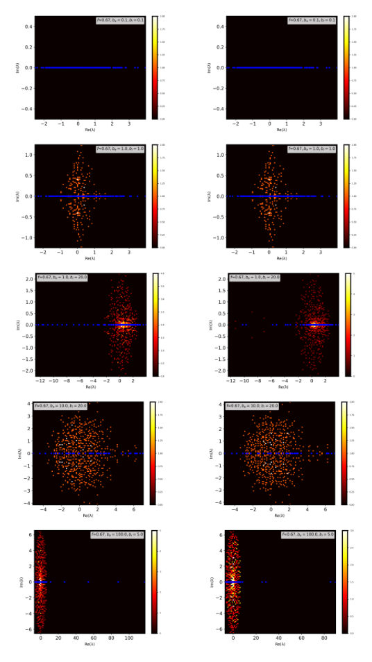
<figcaption class="paper-figure-caption"><b>Fig 3.</b> Figure 3: Eigenvalue density spectra for the ECE (Exponential Decay) model of a synaptic</figcaption>
</figure>
<figure class="paper-figure-card">
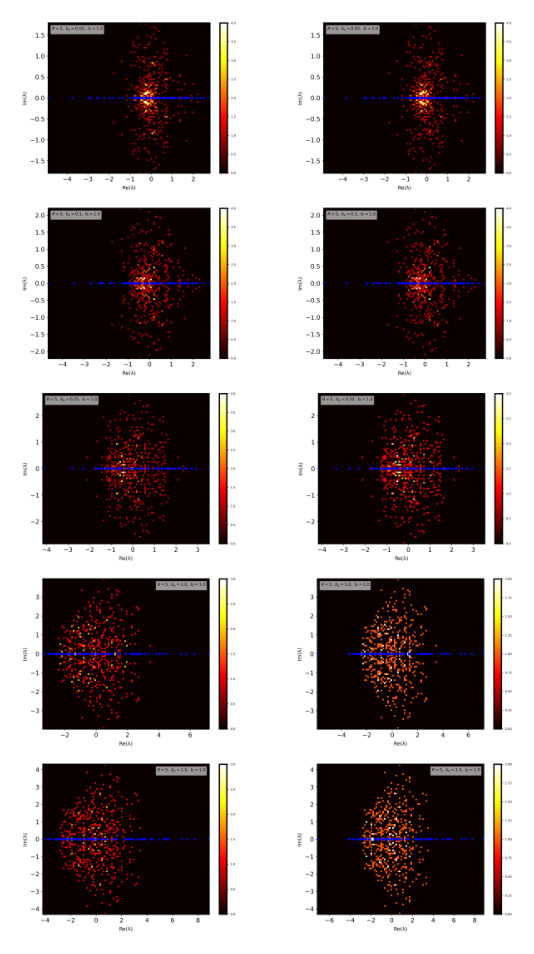
<figcaption class="paper-figure-caption"><b>Fig 4.</b> Figure 4: Eigenvalue spectra for SCE model (N = 600, interaction range R = 5) across</figcaption>
</figure>
<figure class="paper-figure-card">
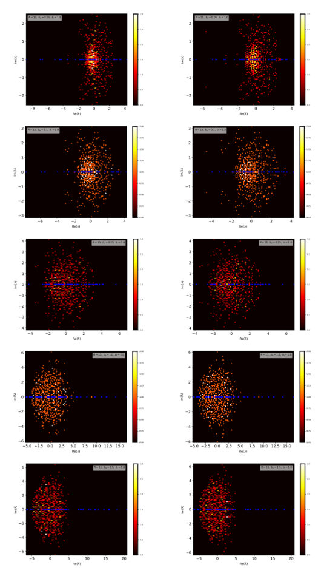
<figcaption class="paper-figure-caption"><b>Fig 5.</b> Figure 5: Eigenvalue spectra for SCE model (N = 600, R = 15) across increasing variance be.</figcaption>
</figure>
</div>

<p><strong>Summary.</strong> This theoretical work investigates how the spectral properties of synaptic matrices dictate the stability and dynamics of neural networks. By comparing various sparsity models, the authors show that local structural correlations can induce instabilities (positive outliers) that are robust even when global homeostatic balance is imposed. This highlights that local topology, rather than global constraints, governs the network's functional state.</p>
<p><strong>Why it may be interesting.</strong> The rigorous mathematical framework used to analyze spectral stability in complex, non-equilibrium systems like the brain is highly relevant to understanding the dynamics of open quantum systems or many-body systems near criticality.</p>
<details>
<summary>Detailed structure</summary>
<p><strong>Main problem.</strong> The paper analyzes the spectral behavior of the synaptic matrix to understand the stability, dynamics, and memory capacity of complex, sparsely connected neural networks.</p>
<p><strong>Main result.</strong> The spectral properties are highly sensitive to the type of connectivity structure (e.g., Power-Law vs. Uniform) and show that global homeostatic constraints (like row-sum zero) are insufficient to stabilize the network against instabilities arising from local spatial correlations.</p>
<p><strong>Method.</strong> The authors use spectral analysis of the synaptic matrix eigenvalues, comparing ensemble averages across various connectivity models (UCE, PCE, ECE, SCE) and testing the impact of balance constraints.</p>
<p><strong>Model / system.</strong> The system is a neural network whose connectivity is defined by a synaptic matrix J. The analysis moves from dense to highly sparse models, incorporating biological constraints like Dale's Law and spatial decay functions.</p>
<p><strong>Key observables.</strong> Eigenvalues ($\lambda_k$), spectral radius, spectral bulk density ($
ho_J(z)$), and the real part of eigenvalues ($  ext{Re}(\lambda)$) relative to the stability line $ ext{Re}(\lambda) = 1$.</p>
<p><strong>Important parameters / regimes.</strong> Sparsity level (controlled by interaction range $R$), population bias ($f$), and the specific decay function (Uniform, Power-Law, Exponential).</p>
<p><strong>Assumptions / limitations.</strong> The analysis assumes the synaptic matrix is a real asymmetric matrix and often employs statistical fitting techniques (e.g., Skew-Student-t distribution) to model the spectral bulk.</p>
<p><strong>Figures summary.</strong> Figures compare spectral distributions for UCE, PCE, and ECE models under unbalanced vs. balanced conditions, illustrating spectral 'blades' and the failure of global balance to suppress positive real outliers in spatially correlated models.</p>
<p><strong>Paper structure.</strong> The paper progresses by first establishing the need for statistical spectral analysis over exact determination, then comparing different connectivity models (UCE, PCE, ECE, SCE), and finally demonstrating how local correlations induce instabilities that global balancing rules cannot correct.</p>
</details>
<details>
<summary>Abstract</summary>
<p>The spectral behaviour of the synaptic matrix, representing the neuronal connection strengths, is an important tool to analyze the stability and transient dynamics of a typical brain as well as its learning process and memory capacity. The complexity of the brain due to large number of neurons as well as underlying transient mechanisms e.g. homeostasis, seizure or synaptic plasticity can lead to networks with time-varying degree and type of sparsity. This renders an exact determination of the synaptic matrix not only technically difficult but also meaningless, leaving its statistical analysis as the best available theoretical approach. This motivates us to pursue a spectral analysis of the synaptic matrix models with different type of sparsity and thereby analyze latter's role on various aspects of network dynamics and stability. Our results have potential relevance for detemining the type of synaptic sparsity required to induce a specific brain function or desired transient mechanism e.g for pharmacological effects or physiological modulators.</p>
</details>
<p><sub><a href="#top">↑ back to top</a></sub></p>

<p><a id="paper-2606.01593"></a></p>
<h3 id="resonant-coupling-and-the-non-phononic-flat-band-in-amorphous-solids"><a href="http://arxiv.org/abs/2606.01593v1">Resonant Coupling and the Non-Phononic Flat Band in Amorphous Solids</a></h3>
<p><strong>Authors:</strong> Matteo Baggioli, Bingyu Cui<br>
<strong>Type:</strong> theory · <strong>Category:</strong> disordered systems and neural networks · <strong>PDF:</strong> <a href="https://arxiv.org/pdf/2606.01593v1">https://arxiv.org/pdf/2606.01593v1</a><br>
<strong>Analysis basis:</strong> full PDF text, analyzed in chunks
<strong>Topic relevance:</strong> <code>Keldysh / 2PI / non-Gaussian methods</code> <strong>1/5</strong> · <code>analog quantum simulation</code> <strong>1/5</strong> · <code>correlated / nonlocal dissipation</code> <strong>1/5</strong> · <code>driven-dissipative phase transition</code> <strong>1/5</strong> · <code>methods for driven-dissipative</code> <strong>1/5</strong> · <code>non-equilibrium dynamics</code> <strong>1/5</strong></p>
<div class="figure-strip-hint">↔ Scroll figures horizontally</div>
<div class="paper-figures-scroll">
<figure class="paper-figure-card">
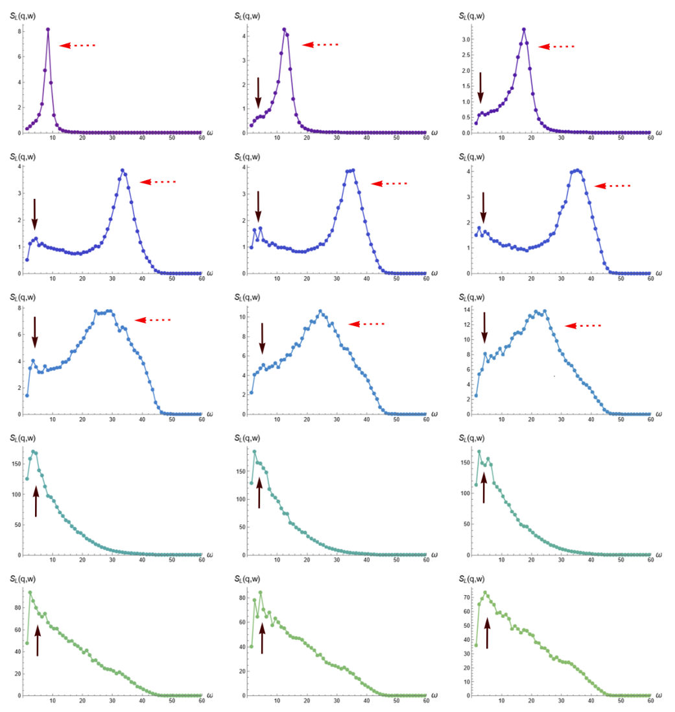
<figcaption class="paper-figure-caption"><b>Fig 1.</b> FIG. 1: The emergence of the non-phononic flat band in the dynamic structure factor of amorphous solids: the example of metallic glasses. Constant-q cuts of the longitudinal dynamical structure factor SL(q, ω) as a function of frequency ω for a simulated three-dimensional metallic glass. The wave vector q increases from the top-left panel to the bottom-right panel; q = 0.1, 0.2, 0.3, 0.9, 1, 1.1, 1.7, 1.8, 1.9, 2.5, 2.6, 2.7, 3.2, 3.3, 3.4. The red dashed arrow indicates the dispersing phononic peak, while the filled black arrow marks the non-phononic peak associated with the flat band. The data are reproduced with permission from Ref. [10].</figcaption>
</figure>
<figure class="paper-figure-card">
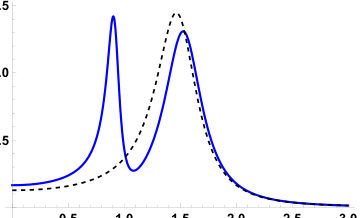
<figcaption class="paper-figure-caption"><b>Fig 2.</b> FIG. 2: Example of the hybridized excitation spec- trum. Top: Density map of the dynamic structure factor S(q, ω) and dispersion relation of the modes (black dashed curves) showing the avoided crossing and frequency splitting around qres = 1. Bottom: dynamic structure factor at fixed q = 1.5 (red vertical dashed line in top panel), displaying the characteristic two-peak structure, which is absent in the limit of vanishing coupling to QLVs (black dashed curve). Parameters: ωLV = kBT = M = 1 with Ω(q) = q, γ = 0.1, Γ(q) = 0.2q2 and g(q) = 0.1q2. The power-law scalings of Γ(q), g(q) do not carry any specific physical meaning at this stage.</figcaption>
</figure>
<figure class="paper-figure-card">
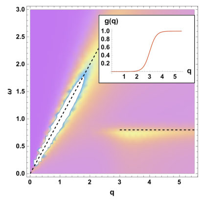
<figcaption class="paper-figure-caption"><b>Fig 3.</b> FIG. 3: Resonant coupling and flat-band intensity. Ex- ample of a resonant coupling g(q) that vanishes below a crit- ical wavevector q∗≈2.5 (inset). The corresponding density map of S(q, ω) displays a flat-band signal emerging only for q &gt; q∗. Here, M = kBT = 1, Ω(q) = q, Γ(q) = 0.2q2, γ = 0.15, and ωQLV = 0.8 (horizontal black dashed line).</figcaption>
</figure>
<figure class="paper-figure-card">
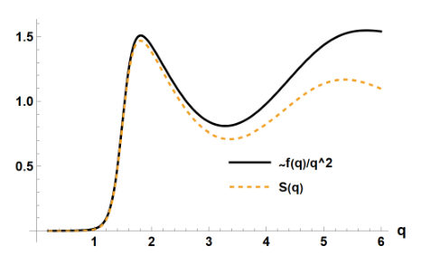
<figcaption class="paper-figure-caption"><b>Fig 4.</b> FIG. 4: Static structure factor and flat-band intensity. A representative example in which the normalized flat-band intensity, f(q)/q2, closely follows the trend of an artificial static structure factor S(q) (orange dashed line), introduced in the model through the simplified choice g(q) ∝S(q). The remaining parameters are set to kBT = M = 1, γ = 0.1, Ω(q) = 0.5 q, Γ(q) = 5 × 10−4 q2, and ωQLV = 10. For clarity of visualization, the black curve is rescaled by an appropriate constant.</figcaption>
</figure>
<figure class="paper-figure-card">
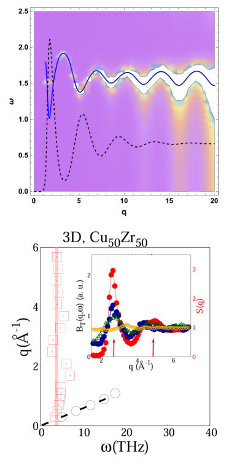
<figcaption class="paper-figure-caption"><b>Fig 5.</b> FIG. 5: Anti-correlation between flat-band dispersion and resonant coupling/static structure factor. Top panel: Illustration of the anti-correlation between the flat- band dispersion (color background and solid blue line) and the resonant coupling g(q) (black dashed line), modeled here as an oscillatory function to mimic the behavior of a realistic static structure factor S(q). For clarity, the amplitude of g(q) is rescaled by a factor of 30. The others parameters used in this figure are: Γ = 10−3q2, kB = T = M = 1, γ = 0.01, ωQLV = 2, while the long-wavelength phonon dispersion is taken as Ω(q) = 3q + . . . The phonon dispersion is not visible because of the small frequency range chose and...</figcaption>
</figure>
</div>

<p><strong>Summary.</strong> This work investigates the non-phononic flat band in amorphous solids by developing a resonant-coupling model. The model posits that the flat band arises from the resonant interaction between acoustic phonons and localized vibrational modes (QLVs). This framework successfully explains the observed spectral features and links the flat band's energy directly to the characteristic Boson Peak frequency.</p>
<p><strong>Why it may be interesting.</strong> The concept of resonant coupling between propagating modes (phonons) and localized excitations (QLVs) is relevant to understanding energy dissipation and mode hybridization in complex, disordered quantum systems, which has parallels in open quantum systems theory.</p>
<details>
<summary>Detailed structure</summary>
<p><strong>Main problem.</strong> The paper addresses the physical origin and nature of the non-phononic flat band observed in the dynamical structure factor of amorphous solids.</p>
<p><strong>Main result.</strong> A resonant-coupling model successfully reproduces the key features of the flat band, establishing its connection to the boson peak via coupling between acoustic phonons and quasi-localized vibrations.</p>
<p><strong>Method.</strong> The authors employ a resonant-coupling model derived from a soft-potential scenario, analyzing the renormalized phonon Green's function.</p>
<p><strong>Model / system.</strong> The system is two- and three-dimensional amorphous solids. The model involves coupling acoustic phonons (phononic modes) with single-frequency quasi-localized vibrations (QLVs) via a resonant interaction term.</p>
<p><strong>Key observables.</strong> Dynamical structure factor $S(q, \omega)$, the non-phononic flat band signal, and the Boson Peak (BP) in the vibrational density of states.</p>
<p><strong>Important parameters / regimes.</strong> The critical wave vector $q^*$ (related to the first diffraction peak) and the coupling strength $g(q)$ which is hypothesized to scale with the static structure factor $S(q)$.</p>
<p><strong>Assumptions / limitations.</strong> The model assumes a single QLV frequency and damping, and the resonant coupling framework is fundamentally macroscopic and phenomenological.</p>
<p><strong>Figures summary.</strong> Figures illustrate the flat band signal relative to the phononic peak, show the correlation between flat-band intensity and $S(q)$, and demonstrate the emergence of the flat band at the QLV frequency.</p>
<p><strong>Paper structure.</strong> The paper introduces the problem using experimental observations, develops the resonant-coupling model (RCM) by modifying the phonon Green's function, derives the resulting flat-band intensity, and compares the model's predictions against known structural correlations.</p>
</details>
<details>
<summary>Abstract</summary>
<p>Recent experiments and simulations provide compelling evidence for the emergence of a non-phononic flat band in the dynamical structure factor of two- and three-dimensional amorphous solids. This feature has been suggested to be connected to the excess in the reduced vibrational density of states of glasses, commonly known as the boson peak, and displays several apparently universal characteristics. First, it is nearly dispersionless, with an energy close to the boson-peak frequency. Second, its intensity is negligible below a critical wave vector of the order of the first diffraction peak. Third, its reduced intensity exhibits a strong correlation with the static structure factor. Here, we revisit the resonant-coupling model, a single-mode harmonic realization of the soft-potential scenario in which acoustic phonons interact with single frequency quasi-localized vibrations. We show that this minimal framework naturally reproduces the main features of the observed flat band and clarifies its connection to the boson peak.</p>
</details>
<p><sub><a href="#top">↑ back to top</a></sub></p>

<p><a id="paper-2606.01318"></a></p>
<h3 id="entangled-two-photon-absorption-in-cesium-atoms-and-the-limitations-of-the-far-off-resonance-approximation"><a href="http://arxiv.org/abs/2606.01318v1">Entangled Two-Photon Absorption in Cesium Atoms and the Limitations of the Far-Off-Resonance Approximation</a></h3>
<p><strong>Authors:</strong> Michael Caracas Núñez, Dario Egloff, Mayerlin Nuñez Portela<br>
<strong>Type:</strong> theory · <strong>Category:</strong> other · <strong>PDF:</strong> <a href="https://arxiv.org/pdf/2606.01318v1">https://arxiv.org/pdf/2606.01318v1</a><br>
<strong>Analysis basis:</strong> full PDF text, analyzed in chunks
<strong>Topic relevance:</strong> <code>Keldysh / 2PI / non-Gaussian methods</code> <strong>1/5</strong> · <code>analog quantum simulation</code> <strong>1/5</strong> · <code>entanglement &amp; information structure</code> <strong>1/5</strong> · <code>interference shaping light</code> <strong>1/5</strong> · <code>methods for driven-dissipative</code> <strong>1/5</strong></p>
<div class="figure-strip-hint">↔ Scroll figures horizontally</div>
<div class="paper-figures-scroll">
<figure class="paper-figure-card">
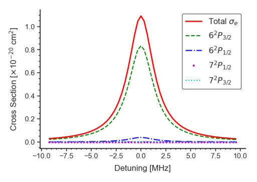
<figcaption class="paper-figure-caption"><b>Fig 1.</b> Figure 1. Far-off-resonance ETPA cross section as a function of the detuning, ∆/2π, of the pump beam with respect to the two-photon transition 62S1/2 →82S1/2 in cesium atoms. The solid line corresponds to the total ETPA cross section, i.e, considering all the spectroscopic information in Appendix E. Dashed lines are the individual cross sections for each of the intermediate states. This graphic is obtained considering an entanglement time of Te = 100 fs and an entanglement area of A0 = 1.8 × 10−8 m2.</figcaption>
</figure>
<figure class="paper-figure-card">
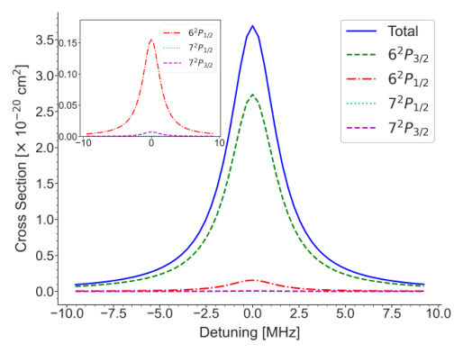
<figcaption class="paper-figure-caption"><b>Fig 2.</b> Figure 2. ETPA cross section without the far-off-resonance approximation as a function of the detuning ∆/2π for the TPA transition 62S1/2 →82S1/2 in cesium atoms. The inset shows the cross section for the intermediate transition paths with the lowest contributions to the total ETPA cross section.</figcaption>
</figure>
<figure class="paper-figure-card">
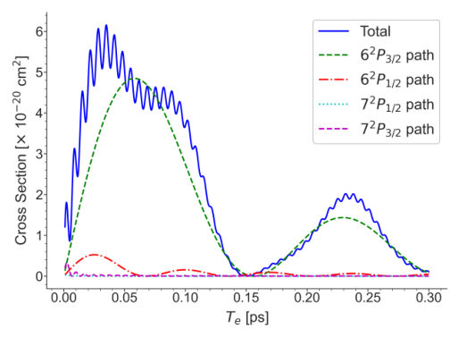
<figcaption class="paper-figure-caption"><b>Fig 3.</b> Figure 3. ETPA cross section without the far-off-resonance approximation as a function of the entanglement time Te for ∆= 0 (resonance) for the TPA transition 62S1/2 →82S1/2 in cesium atoms. The inset shows the cross section for the intermediate transition paths with the lowest contributions to the total ETPA cross section.</figcaption>
</figure>
<figure class="paper-figure-card">
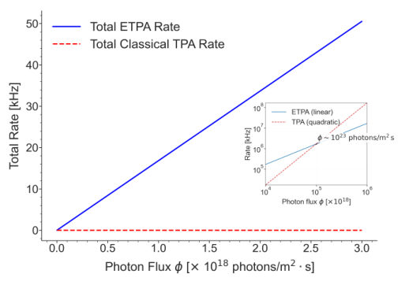
<figcaption class="paper-figure-caption"><b>Fig 4.</b> Figure 5. Total rate of the TPA and ETPA processes as a function of the photon flux. The ETPA rate is computed from Eq. (40), while the TPA rate is computed from the numbers reported in [29]. For this calculation, we assumed an entan- glement area of A0 = 1.8 × 10−8 m2, an entanglement time Te = 95.44 fs, and an atomic density of 1019 atoms per m3. The inset shows the same plot with values around the photon flux required to have the same rates for the TPA and ETPA processes in logarithmic scale.</figcaption>
</figure>
<figure class="paper-figure-card">
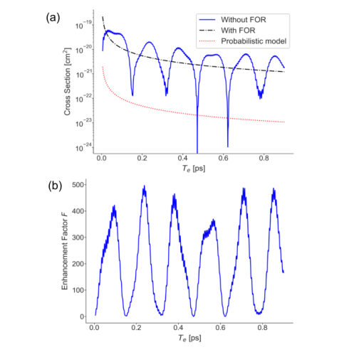
<figcaption class="paper-figure-caption"><b>Fig 5.</b> Figure 4. a) ETPA cross section as a function of the entan- glement time for the three approximations considered in this work. b) shows the enhancement factor F obtained without the FOR approximation as a function of the entanglement time Te.</figcaption>
</figure>
</div>

<p><strong>Summary.</strong> This theoretical study calculates the entangled two-photon absorption cross-section in Cesium atoms using entangled photon pairs. It critically analyzes the limitations of the Far-Off-Resonance approximation, demonstrating that neglecting full spectral details causes the predicted enhancement factor to deviate significantly from the true, oscillating quantum value. The findings provide a crucial theoretical benchmark for future experimental measurements of ETPA.</p>
<p><strong>Why it may be interesting.</strong> This work is highly relevant to AMO physics and quantum optics as it tackles a complex, non-linear quantum process (ETPA) and provides a rigorous comparison between simplified theoretical approximations and the full quantum treatment.</p>
<details>
<summary>Detailed structure</summary>
<p><strong>Main problem.</strong> The paper investigates the discrepancies between theoretical and experimental results concerning the entangled two-photon absorption (ETPA) process in atomic systems.</p>
<p><strong>Main result.</strong> The calculation shows that neglecting the Far-Off-Resonance (FOR) approximation leads to significant differences, with the enhancement factor oscillating and reaching values much higher than the constant value predicted by the FOR approximation.</p>
<p><strong>Method.</strong> The study employs a theoretical framework using the density operator formalism and calculates the ETPA cross-section by comparing results derived with and without the FOR approximation.</p>
<p><strong>Model / system.</strong> The system is Cesium atoms undergoing the $6S_{1/2} 
ightarrow 8S_{1/2}$ transition, driven by entangled photon-pairs generated via Spontaneous Parametric Down-Conversion (SPDC).</p>
<p><strong>Key observables.</strong> ETPA cross section ($\sigma_e$), enhancement factor ($F$), and the rate of ETPA ($R_{ETPA}$).</p>
<p><strong>Important parameters / regimes.</strong> Entanglement time ($T_e$), Entanglement Area ($A_0$), and the detuning ($\Delta$) relative to the two-photon transition.</p>
<p><strong>Assumptions / limitations.</strong> The analysis critically compares results derived under the Far-Off-Resonance (FOR) approximation against the full calculation, which accounts for interference effects.</p>
<p><strong>Figures summary.</strong> Figures illustrate the ETPA cross-section dependence on detuning ($\Delta$) and entanglement time ($T_e$), explicitly comparing results obtained with and without the FOR approximation.</p>
<p><strong>Paper structure.</strong> The paper builds the calculation by first defining the system using the joint spectral amplitude of the photon pairs, then deriving the cross-section using the density operator formalism, and finally contrasting the simplified FOR result against the full, oscillatory result.</p>
</details>
<details>
<summary>Abstract</summary>
<p>The discrepancies between theoretical and experimental results in the process of entangled two-photon absorption (ETPA) are not fully understood. Atomic systems are a promising alternative for investigating this process without the systematic effects present in molecules. We present a theoretical study of the ETPA process in cesium atoms, focusing on the 6S1/2 --&gt; 8S1/2 transition. The ETPA cross section is evaluated both with and without the far-off-resonance (FOR) approximation, including the contributions from intermediate atomic states and decoherence effects. The quantum state of light considered is described by the joint spectral amplitude of photon-pairs produced by the spontaneous parametric down-conversion process. When the FOR approximation is applied, the enhancement factor is constant (36*pi). In contrast, without this approximation the enhancement factor oscillates with the entanglement time, and achieves a maximum value of ~500. These results show the limitations of approximations when calculating the ETPA cross section and contribute to the understanding of the discrepancies between theoretical and experimental values for the ETPA cross section in different samples. The numbers presented in this work can be a starting point for designing experiments aimed at measuring ETPA cross sections in alkali atoms.</p>
</details>
<p><sub><a href="#top">↑ back to top</a></sub></p>

<p><a id="paper-2606.01501"></a></p>
<h3 id="the-longest-increasing-subsequence-problem-revisited"><a href="http://arxiv.org/abs/2606.01501v1">The Longest Increasing Subsequence Problem revisited</a></h3>
<p><strong>Authors:</strong> Silvio Franz, Roberto Mulet<br>
<strong>Type:</strong> theory · <strong>Category:</strong> disordered systems and neural networks · <strong>PDF:</strong> <a href="https://arxiv.org/pdf/2606.01501v1">https://arxiv.org/pdf/2606.01501v1</a><br>
<strong>Analysis basis:</strong> full PDF text, analyzed in chunks
<strong>Topic relevance:</strong> <code>analog quantum simulation</code> <strong>1/5</strong> · <code>driven-dissipative phase transition</code> <strong>1/5</strong> · <code>methods for driven-dissipative</code> <strong>1/5</strong> · <code>non-equilibrium dynamics</code> <strong>1/5</strong> · <code>non-equilibrium universality</code> <strong>1/5</strong></p>
<div class="figure-strip-hint">↔ Scroll figures horizontally</div>
<div class="paper-figures-scroll">
<figure class="paper-figure-card">
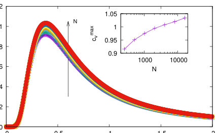
<figcaption class="paper-figure-caption"><b>Fig 1.</b> FIG. 2. Specific heat as a function of temperature for different system sizes N = 256, 512, 1024, 2048, 4096, 8192, 16384. The peak at Tcross ∼0.38 indicates a finite-size crossover, while the behavior at lower temperatures reveals a freezing transition at Tcond = 0.10 ± 0.02.</figcaption>
</figure>
<figure class="paper-figure-card">
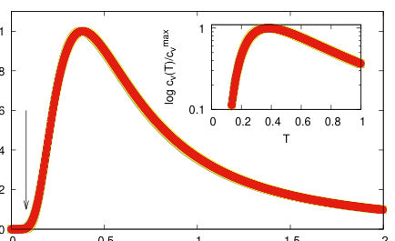
<figcaption class="paper-figure-caption"><b>Fig 2.</b> FIG. 3. The specific heat cv(T, N) scaled by cv(N)max for different system sizes N = 256, 512, 1024, 2048, 4096, 8192, 16384. The arrow indi- cates the condensation transition. In the inset we reproduce the same plot on logarithmic scale to show the exponential decay at Tcond ≈0.1.</figcaption>
</figure>
<figure class="paper-figure-card">
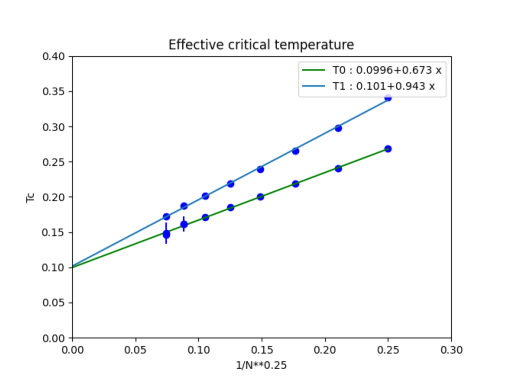
<figcaption class="paper-figure-caption"><b>Fig 3.</b> FIG. 4. The ground state and the first excited state tem- perature T0 and T1 respectively as a function of 1/N 1/4. A linear fit indicates that both temperatures converge to Tcond = 0.10 ± 0.02 for N →∞, signaling a freezing tran- sition in the thermodynamic limit.</figcaption>
</figure>
<figure class="paper-figure-card">
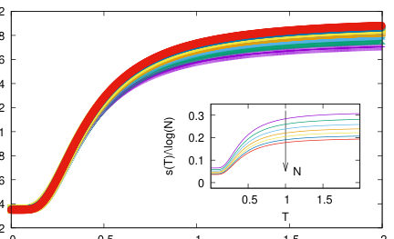
<figcaption class="paper-figure-caption"><b>Fig 4.</b> FIG. 5. Main panel: entropy density s(T) = S(T)/ √</figcaption>
</figure>
<figure class="paper-figure-card">
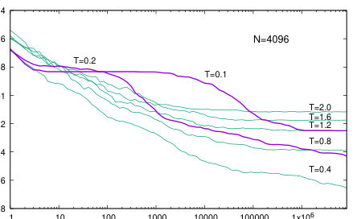
<figcaption class="paper-figure-caption"><b>Fig 5.</b> FIG. 7. Energy versus time for Monte Carlo simulations at various temperatures, N = 4096. The dramatic slowing down below Tcross is indicative of the appearance of a complex land- scape.</figcaption>
</figure>
</div>

<p><strong>Summary.</strong> This paper analyzes the Longest Increasing Subsequence problem by mapping it onto a statistical mechanical model exhibiting phase transitions. It identifies a condensation transition that causes the system's ground state manifold to become thermodynamically sparse. This sparsity is shown to be the root cause of dynamic trapping, making the problem computationally hard for local search methods, even though polynomial-time solutions exist.</p>
<p><strong>Why it may be interesting.</strong> The connection between a combinatorial optimization problem (LIS) and glassy dynamics, driven by thermodynamic sparsity, provides a powerful analogy for understanding computational hardness in complex physical systems, relevant to disordered models studied in AMO and condensed matter.</p>
<details>
<summary>Detailed structure</summary>
<p><strong>Main problem.</strong> The paper revisits the Longest Increasing Subsequence (LIS) problem, treating it as a system whose thermodynamic properties and dynamical behavior can be analyzed using statistical mechanics.</p>
<p><strong>Main result.</strong> The LIS problem exhibits a condensation transition at a finite temperature, suggesting that thermodynamic sparsity, rather than simple energetic barriers, causes local search algorithms to become dynamically trapped in glassy states.</p>
<p><strong>Method.</strong> The authors employ thermodynamic formalism (microcanonical/canonical ensembles) alongside Monte Carlo simulations to study the system's phase transitions and dynamics.</p>
<p><strong>Model / system.</strong> The LIS problem is mapped onto a system defined on a sequence of random numbers, modeled as a directed polymer on a random graph (Ulam random graph). The energy is related to the length of the subsequence.</p>
<p><strong>Key observables.</strong> Specific heat ($C_v$), configurational entropy ($S(\ell)$), and dynamical overlap ($Q(t)$).</p>
<p><strong>Important parameters / regimes.</strong> Two critical temperatures: a Schottky crossover ($T_{	ext{cross}} \approx 0.38$) and a condensation transition ($T_{	ext{cond}} = 0.10 \pm 0.02$).</p>
<p><strong>Assumptions / limitations.</strong> The analysis assumes the quenched sequence is i.i.d., and the low-energy sector can be modeled by independent two-level systems.</p>
<p><strong>Figures summary.</strong> Figures illustrate the specific heat peak at $T_{	ext{cross}}$ and the condensation transition at $T_{	ext{cond}}$, alongside entropy density convergence to a plateau below $T_{	ext{cond}}$.</p>
<p><strong>Paper structure.</strong> The paper progresses by establishing the thermodynamic framework, identifying two distinct temperature scales ($T_{	ext{cross}}$ and $T_{	ext{cond}}$), and then contrasting the dynamics observed during sudden quenches (glassy trapping) versus controlled annealing.</p>
</details>
<details>
<summary>Abstract</summary>
<p>The Longest Increasing Subsequence problem - a classic combinatorial challenge with deep connections to statistical mechanics- exhibits a rich thermodynamic landscape. Introducing a temperature we identify two distinct energy scales: A Schottky-like crossover at T_cross and a condensation transition at T_cond, below which the number of maximum-length configurations becomes sub-exponential in system size. We also show that despite the existence of polynomial-time dynamic programming algorithms for the ground state, local Monte Carlo dynamics, after sudden quenches at low temperatures, become trapped in metastable state configurations displaying characteristic glassy signatures: two-step relaxation, persistent dynamical overlaps and aging. On the other hand, logarithmic annealing tracks equilibrium down to the ground state. These results establish that thermodynamic sparsity - not energetic barriers - can render local search dynamically intractable, positioning the LIS problem as a bridge between exactly solvable optimization and glassy spin-glass phenomenology.</p>
</details>
<p><sub><a href="#top">↑ back to top</a></sub></p>

<p><a id="paper-2606.00789"></a></p>
<h3 id="pre-failure-response-spectra-predict-finite-amplitude-fragility"><a href="http://arxiv.org/abs/2606.00789v1">Pre-failure response spectra predict finite-amplitude fragility</a></h3>
<p><strong>Authors:</strong> Surachate Limkumnerd<br>
<strong>Type:</strong> theory · <strong>Category:</strong> statistical mechanics · <strong>PDF:</strong> <a href="https://arxiv.org/pdf/2606.00789v1">https://arxiv.org/pdf/2606.00789v1</a><br>
<strong>Analysis basis:</strong> full PDF text, analyzed in chunks
<strong>Topic relevance:</strong> <code>Frenkel-Kontorova</code> <strong>1/5</strong> · <code>driven-dissipative phase transition</code> <strong>1/5</strong> · <code>non-equilibrium dynamics</code> <strong>1/5</strong> · <code>non-equilibrium universality</code> <strong>1/5</strong></p>
<div class="figure-strip-hint">↔ Scroll figures horizontally</div>
<div class="paper-figures-scroll">
<figure class="paper-figure-card">
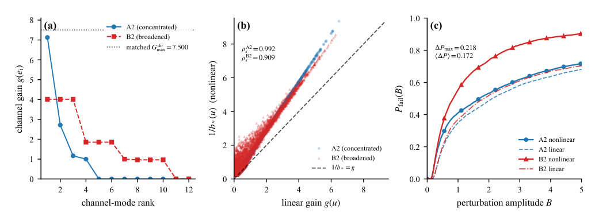
<figcaption class="paper-figure-caption"><b>Fig 1.</b> FIG. 1. Direct high-dimensional validation of response-spectrum fragility in a controlled nonlinear non-normal branched network. The geometry separates strongest-direction gain from response-channel breadth. Two stable N = 12 systems have matched strongest directional gain Gmax,dir but different channel-mode breadth. (a) Ranked response-channel weights show a concentrated system A and a broader system B. (b) Boundary-normalized gain g(u) predicts the nonlinear inverse failure distance 1/b∗(u) across sampled directions; the relation is strongly monotone though offset from the identity, consistent with nonlinear correction. (c) The broader system has a larger nonlinear fragility curve even...</figcaption>
</figure>
</div>

<p><strong>Summary.</strong> This work introduces the concept of 'finite-amplitude fragility,' arguing that system failure susceptibility depends not just on the worst-case path but on the volume of near-dangerous perturbations. The authors show that this volume dependence, or 'breadth,' can be predicted using only linear response diagnostics, providing a powerful, pre-failure diagnostic tool for complex nonlinear systems.</p>
<p><strong>Why it may be interesting.</strong> The concept of 'response-spectrum breadth' as a pre-failure coordinate is highly relevant for understanding robustness in complex, non-normal systems, which has parallels in analyzing stability in open quantum systems or coupled nonlinear oscillators.</p>
<details>
<summary>Detailed structure</summary>
<p><strong>Main problem.</strong> The paper distinguishes between failure susceptibility determined by the single most unstable mode versus that dependent on the volume of nearly dangerous perturbations (finite-amplitude fragility).</p>
<p><strong>Main result.</strong> The breadth of the response spectrum, quantified by measures like channel min-entropy, predicts the finite-amplitude fragility curve independently of the strongest directional gain.</p>
<p><strong>Method.</strong> The authors develop a pre-failure predictor based on the tail of the boundary-normalized fragility gain, validating it against nonlinear measurements in complex networks and traffic models.</p>
<p><strong>Model / system.</strong> The analysis uses high-dimensional nonlinear non-normal networks, a weakly nonlinear system ($\dot{x} = Ax + eta x^{\circ 2}$), and a deterministic traffic breakdown model on a periodic ring.</p>
<p><strong>Key observables.</strong> Fragility curve ($P_{	ext{fail}}(B)$), boundary-normalized fragility gain ($g(u)$), Response-Spectrum Breadth ($  ext{Sch}<em ext_ch="ext{ch">{\min}, n</em>$).}}^{  ext{eff}}$), and deterministic jam thresholds ($B_{th</p>
<p><strong>Important parameters / regimes.</strong> The strongest directional gain ($G_{\max, 	ext{dir}}$) is held fixed while varying the response-spectrum breadth.</p>
<p><strong>Assumptions / limitations.</strong> The primary predictor $Q_g(s)$ is shown to predict the nonlinear failure distance, though the linear approximation cost only provides bounds.</p>
<p><strong>Figures summary.</strong> Figures compare concentrated vs. broadened channel weights, showing the broader system has a larger nonlinear fragility curve despite matched strongest directional gain. Traffic analysis shows threshold shifts correlating with response-path entropy.</p>
<p><strong>Paper structure.</strong> The paper establishes the theoretical distinction between extremal failure and volume-dependent fragility, develops the linear predictor based on gain tails, validates this predictor in a branched network, and finally confirms the effect using a deterministic traffic flow model.</p>
</details>
<details>
<summary>Abstract</summary>
<p>Failure theories often identify a single leading route to failure: the most unstable mode, weakest link, minimum-action escape path, or optimal perturbation. Yet finite-amplitude susceptibility depends not only on the nearest route but on how much of perturbation space lies near dangerous directions. We cast this distinction as a fragility problem: for each perturbation direction, the failure distance is the smallest amplitude that crosses a prescribed boundary, and the fragility curve is the fraction of directions that fail below a given amplitude. Measuring this curve directly requires nonlinear trials over many directions; instead, we show that it is predicted, before any failure occurs, by the tail of a single pre-failure quantity: the boundary-normalized fragility gain computed from the linearized response. The breadth of the associated response spectrum sets how many near-dangerous pathways coexist beyond the strongest direction. We demonstrate the mechanism in a high-dimensional nonlinear non-normal network with the strongest directional gain held fixed: the system with broader response-channel breadth has a larger nonlinear fragility curve, isolating breadth from the worst direction. An independent scalar test in deterministic traffic breakdown confirms the predicted sign: response breadth lowers calibrated jam thresholds once the strongest response is matched, with residual margins screening but never reversing the effect. Response-spectrum breadth thus emerges as a pre-failure coordinate for finite-amplitude fragility beyond the strongest path.</p>
</details>
<p><sub><a href="#top">↑ back to top</a></sub></p>

<p><a id="paper-2606.00458"></a></p>
<h3 id="solving-2d-black-scholes-equation-via-hermitian-block-embedding-and-generalised-quantum-signal-processing"><a href="http://arxiv.org/abs/2606.00458v1">Solving 2D Black Scholes Equation via Hermitian Block Embedding and Generalised Quantum Signal Processing</a></h3>
<p><strong>Authors:</strong> James W. Greenwell, Jingbo Wang, Des Hill<br>
<strong>Type:</strong> theory · <strong>Category:</strong> numerical methods · <strong>PDF:</strong> <a href="https://arxiv.org/pdf/2606.00458v1">https://arxiv.org/pdf/2606.00458v1</a><br>
<strong>Analysis basis:</strong> full PDF text, analyzed in chunks
<strong>Topic relevance:</strong> <code>Keldysh / 2PI / non-Gaussian methods</code> <strong>1/5</strong> · <code>analog quantum simulation</code> <strong>1/5</strong> · <code>methods for driven-dissipative</code> <strong>1/5</strong></p>
<div class="figure-strip-hint">↔ Scroll figures horizontally</div>
<div class="paper-figures-scroll">
<figure class="paper-figure-card">
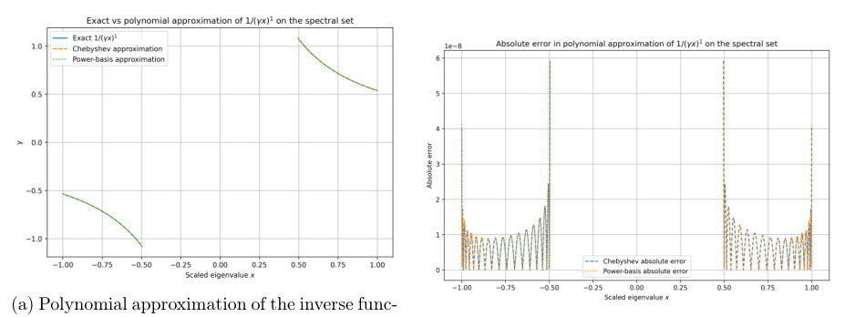
<figcaption class="paper-figure-caption"><b>Fig 1.</b> Figure 1: Polynomial approximation and corresponding absolute error for the two-dimensional inverse step.</figcaption>
</figure>
<figure class="paper-figure-card">
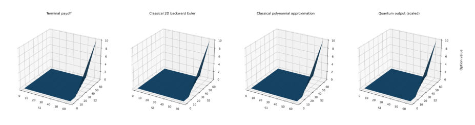
<figcaption class="paper-figure-caption"><b>Fig 2.</b> Figure 2: Comparison of the two-dimensional terminal payoff, classical backward Euler solu- tion, polynomial approximation and the scaled quantum/GQSP output. The terminal payoff is given by the basket call payoff at maturity, while the classical and quantum surfaces show the result after one backward time step. The close agreement between the scaled quantum output, polynomial approximation and the classical backward Euler solution indicates that the GQSP block-embedding construction reproduces the intended inverse time-step action.</figcaption>
</figure>
<figure class="paper-figure-card">

<figcaption class="paper-figure-caption"><b>Fig 3.</b> Figure 4, shows a slice of the payoff, by fixing one asset and varying the other, this reveals that the two-dimensional solution is working well for both assets, with different financial parameters, it is clear to see that indeed each asset has been evolved independently.</figcaption>
</figure>
<figure class="paper-figure-card">

<figcaption class="paper-figure-caption"><b>Fig 4.</b> Figure 3: Absolute error surfaces for the two-dimensional simulation. The left panel shows |Vpoly −VBE|, comparing the polynomial approximation with the same classical benchmark. The right panel shows |VQ −VBE|, comparing the scaled quantum/GQSP output with the classical backward Euler solution.</figcaption>
</figure>
<figure class="paper-figure-card">

<figcaption class="paper-figure-caption"><b>Fig 5.</b> Figure 4: Two-dimensional Black–Scholes solution slices for fixed S1 and fixed S2.</figcaption>
</figure>
</div>

<p><strong>Summary.</strong> This paper adapts quantum linear algebra techniques, specifically GQSP, to solve the complex 2D Black-Scholes equation. It overcomes the challenge of non-Hermitian operators by developing a Hermitian block-embedding method. The results prove the feasibility of using this quantum approach for multidimensional option pricing, benchmarking against classical methods.</p>
<p><strong>Why it may be interesting.</strong> While the application is financial, the underlying mathematical technique—transforming a non-Hermitian operator into a Hermitian one for quantum simulation—is highly relevant to open quantum systems and quantum dynamics where Hamiltonian simulation is common.</p>
<details>
<summary>Detailed structure</summary>
<p><strong>Main problem.</strong> The paper addresses the challenge of solving the two-dimensional Black-Scholes equation, which models no-arbitrage option pricing, by implementing the required matrix function inversion using quantum algorithms.</p>
<p><strong>Main result.</strong> The authors successfully demonstrate that a Hermitian block-embedding method allows the application of Generalised Quantum Signal Processing (GQSP) to the 2D Black-Scholes problem, yielding results that closely match classical benchmarks.</p>
<p><strong>Method.</strong> The core method involves embedding the non-Hermitian time-step matrix into a larger Hermitian block matrix, which then allows the use of GQSP to approximate the inverse matrix function via an odd polynomial transformation.</p>
<p><strong>Model / system.</strong> The model is the two-dimensional Black-Scholes equation for pricing two-asset European options. After finite-difference discretization, this results in a linear algebra problem requiring the inversion of a non-Hermitian time-step matrix.</p>
<p><strong>Key observables.</strong> Option value $V(S_1, S_2, t)$ at different time steps; absolute error surfaces comparing quantum, polynomial, and classical solutions.</p>
<p><strong>Important parameters / regimes.</strong> Volatility ($\sigma_1, \sigma_2$), correlation ($
ho$), time step ($\Delta au$), and the spectral gap ($\delta$) of the Hermitian embedding.</p>
<p><strong>Assumptions / limitations.</strong> The method assumes that the inverse action can be accurately captured by an odd polynomial approximation applied to the spectrum of the Hermitian block-embedded matrix.</p>
<p><strong>Figures summary.</strong> Figures compare the terminal payoff and absolute error surfaces between the quantum GQSP solution, a classical polynomial approximation, and the standard backward Euler benchmark for the 2D case.</p>
<p><strong>Paper structure.</strong> The paper progresses by first establishing the 1D case success, identifying the failure of simple diagonalization in 2D due to closed loops, and then introducing and validating the Hermitian block-embedding technique to enable GQSP application for the 2D inverse step.</p>
</details>
<details>
<summary>Abstract</summary>
<p>The Black Scholes equation provides a fundamental model for the no arbitrage pricing of financial derivatives. After finite difference discretisation, the pricing problem can be formulated as a finite dimensional linear algebra problem involving the inverse of a non Hermitian time step matrix. Recent advances in quantum linear algebra algorithms, particularly the generalised quantum signal processing (GQSP)algorithm, enable matrix functions to be implemented through polynomial transformations of a suitable unitary or Hermitian form. In this paper, we develop a Hermitian block embedding method that enables GQSP to be applied to the two dimensional Black Scholes equation. Numerical simulations for two asset European call options are performed to evaluate the proposed approach. GQSP based solutions are benchmarked against the classical polynomial approximation with backward Euler finite difference method, showing close agreement. This indicates that the Hermitian block embedding construction accurately captures the dynamics of the original non Hermitian operator. These results demonstrate the feasibility of combining Hermitian block embeddings with GQSP for multidimensional Black Scholes problems and provide a proof of principle for applying modern quantum linear algebra techniques to option pricing.</p>
</details>
<p><sub><a href="#top">↑ back to top</a></sub></p>

<p><a id="paper-2606.01984"></a></p>
<h3 id="spin-dynamics-from-niu-kleinman-adiabatic-approach-and-slave-boson-mean-field-theory"><a href="http://arxiv.org/abs/2606.01984v1">Spin Dynamics from Niu-Kleinman Adiabatic Approach and Slave Boson Mean Field Theory</a></h3>
<p><strong>Authors:</strong> Xuan Yang, Tianyang Xie, Shaohang Shi, Kun Jiang, Jiangping Hu<br>
<strong>Type:</strong> theory · <strong>Category:</strong> strongly correlated electrons · <strong>PDF:</strong> <a href="https://arxiv.org/pdf/2606.01984v1">https://arxiv.org/pdf/2606.01984v1</a><br>
<strong>Analysis basis:</strong> full PDF text, analyzed in chunks
<strong>Topic relevance:</strong> <code>Keldysh / 2PI / non-Gaussian methods</code> <strong>1/5</strong> · <code>analog quantum simulation</code> <strong>1/5</strong> · <code>methods for driven-dissipative</code> <strong>1/5</strong></p>
<div class="figure-strip-hint">↔ Scroll figures horizontally</div>
<div class="paper-figures-scroll">
<figure class="paper-figure-card">

<figcaption class="paper-figure-caption"><b>Fig 1.</b> FIG. 1: Workflow for computing the spin wave energy at a fixed spiral wavevector ⃗q. The central step is to obtain a family of saddle point solutions for the same ⃗q, including the reference state and nearby perturbed states, from which the Berry curvature matrix and the energy Hessian are constructed.</figcaption>
</figure>
<figure class="paper-figure-card">

<figcaption class="paper-figure-caption"><b>Fig 2.</b> FIG. 2: Spin wave dispersion of the half filled single orbital Hubbard model obtained from different methods. The parameters are U = 8.0 and n = 1.0. The method developed in this work is denoted by NK+KRSB, and the calculation is performed on 80 × 80 magnetic unit cells. The triangle markers show DQMC results on an 8 × 8 lattice, which has no sign problem at half filling. NK+KRSB, similar to TDGA, agrees better with the DQMC results than RPA does, especially around ⃗q = (π, 0).</figcaption>
</figure>
<figure class="paper-figure-card">

<figcaption class="paper-figure-caption"><b>Fig 3.</b> FIG. 3: Spin wave dispersion of La2NiO4. In the calculation, the interaction parameters are chosen as U = 6.0 eV and JH = 1.8 eV, and the lattice has 64 × 64 magnetic unit cells. The gap in the experimental spectrum originates from spin orbit coupling, which is not included in the present calculation.</figcaption>
</figure>
<figure class="paper-figure-card">

<figcaption class="paper-figure-caption"><b>Fig 4.</b> FIG. 4: Comparing the result of RPA and NK+HF method. U = 8.0. The RPA result is almost the same as NK+HF, which indicates that the Niu-Kleinman adiabatic equation captures the essential physics in RPA, at least in the low energy regime.</figcaption>
</figure>
</div>

<p><strong>Summary.</strong> This paper introduces a novel theoretical framework combining the Niu-Kleinman adiabatic theory with slave-boson mean-field theory to study spin dynamics in correlated materials. By solving the constrained slave-boson saddle point self-consistently, the authors derive spin-wave dispersions for the Hubbard model and $\text{La}_2\text{NiO}_4$. This method successfully incorporates strong correlation effects while remaining computationally tractable for studying low-energy magnetic excitations.</p>
<p><strong>Why it may be interesting.</strong> The methodology provides a powerful, computationally efficient way to calculate low-energy excitations in strongly correlated systems, bridging the gap between simple mean-field theories and highly accurate but complex benchmarks like DQMC.</p>
<details>
<summary>Detailed structure</summary>
<p><strong>Main problem.</strong> Developing an efficient theoretical framework to study low-energy spin excitations (spin dynamics) in strongly correlated quantum materials.</p>
<p><strong>Main result.</strong> The combined Niu-Kleinman adiabatic theory with slave-boson mean-field theory yields spin-wave dispersions that show substantially improved agreement with Quantum Monte Carlo benchmarks compared to simpler approximations like RPA.</p>
<p><strong>Method.</strong> The approach combines the Niu-Kleinman adiabatic formalism with the Kotliar-Ruckenstein slave-boson mean-field theory (NK+KRSB) to derive the spin dynamics equation of motion.</p>
<p><strong>Model / system.</strong> The method is applied to the single-orbital Hubbard model and extended to a two-orbital model relevant to $\text{La}_2\text{NiO}_4$, allowing study of realistic multi-orbital correlated systems.</p>
<p><strong>Key observables.</strong> Spin-wave dispersion ($\omega(\mathbf{q})$) and the Berry-curvature matrix.</p>
<p><strong>Important parameters / regimes.</strong> Half-filled filling, strong interaction $U$, and the lattice structure (square lattice for the Hubbard model).</p>
<p><strong>Assumptions / limitations.</strong> The primary assumption is the adiabatic separation of low-energy spin dynamics from higher-energy charge/orbital excitations, and the use of saddle-point approximations for the slave bosons.</p>
<p><strong>Figures summary.</strong> Figure 2 compares the calculated spin-wave dispersion against benchmarks; Figure 3 shows the calculated dispersion for $\text{La}_2\text{NiO}_4$ compared to inelastic neutron scattering data.</p>
<p><strong>Paper structure.</strong> The paper reviews the NK formalism, develops the method for the single-orbital Hubbard model, extends it to multi-orbital systems ($\text{La}_2\text{NiO}_4$), and concludes by demonstrating the method's utility.</p>
</details>
<details>
<summary>Abstract</summary>
<p>Spin-wave excitations provide a central probe of magnetic order and electronic correlations in strongly correlated materials. In this work, we develop an adiabatic theory of spin dynamics by combining the Niu-Kleinman formalism with Kotliar-Ruckenstein slave-boson theory (NK+KRSB). For each frozen spin configuration, the constrained slave-boson saddle point is solved self-consistently, allowing the Berry-curvature matrix and energy Hessian entering the linearized adiabatic equations of motion to be extracted directly. Applied to the half-filled single-orbital Hubbard model, the resulting spin-wave dispersion shows substantially improved agreement with determinant quantum Monte Carlo benchmarks compared with the random phase approximation and closely approaches results from the time-dependent Gutzwiller approximation. We further extend the method to a two-orbital model of $\mathrm{La}_2\mathrm{NiO}_4$, demonstrating its applicability to realistic multi-orbital correlated systems. Because the approach only requires saddle-point solutions near the magnetic ground state, it remains computationally efficient while incorporating strong-correlation effects beyond conventional weak-coupling descriptions, providing a practical framework for studying low-energy spin excitations in correlated quantum materials.</p>
</details>
<p><sub><a href="#top">↑ back to top</a></sub></p>

<p><a id="paper-2606.01110"></a></p>
<h3 id="accelerating-physics-informed-neural-networks-for-full-waveform-inversion-using-a-hybrid-quantum-classical-finite-basis-architecture"><a href="http://arxiv.org/abs/2606.01110v1">Accelerating physics-informed neural networks for full waveform inversion using a hybrid quantum-classical finite-basis architecture</a></h3>
<p><strong>Authors:</strong> Hoang Anh Nguyen, Divakar Vashisth, Ali Tura<br>
<strong>Type:</strong> theory · <strong>Category:</strong> numerical methods · <strong>PDF:</strong> <a href="https://arxiv.org/pdf/2606.01110v1">https://arxiv.org/pdf/2606.01110v1</a><br>
<strong>Analysis basis:</strong> full PDF text, analyzed in chunks
<strong>Topic relevance:</strong> <code>analog quantum simulation</code> <strong>1/5</strong> · <code>methods for driven-dissipative</code> <strong>1/5</strong></p>
<div class="figure-strip-hint">↔ Scroll figures horizontally</div>
<div class="paper-figures-scroll">
<figure class="paper-figure-card">

<figcaption class="paper-figure-caption"><b>Fig 1.</b> Figure 1: Schematic of the finite-basis classical-quantum hybrid architecture, combining classical neural networks and quantum circuits with physics-informed constraints. Blue boxes denote classical networks N, orange boxes quantum circuits Q, green circles the predicted fields ϕ and α, and purple nodes the physics- and data-based residuals contributing to Ltotal.</figcaption>
</figure>
<figure class="paper-figure-card">

<figcaption class="paper-figure-caption"><b>Fig 2.</b> Figure 2: Multilayer PQC Q. Each input feature zi is angle-encoded via an Ry(βi zi) rotation (blue encoding layer), where βi is a trainable scaling parameter. Variational layers of single-qubit rotations Rx, Ry, Rz followed by a linear CNOT ladder are repeated L times (orange block). Each qubit is measured in the Pauli-Z basis (green meters), and the outputs are averaged to yield a scalar in [−1, 1].</figcaption>
</figure>
<figure class="paper-figure-card">

<figcaption class="paper-figure-caption"><b>Fig 3.</b> Figure 3: Anomaly benchmark inversion and convergence. (a) True velocity model used for the spectral-element forward simulation, with source (red star) and receiver array (green triangles). (b) Initial homogeneous velocity model. (c) Inverted velocity model from the quantum hybrid FBPINN at 65,000 training iterations. (d) L1 velocity error versus training iteration for the classical FBPINN baseline (blue), the quantum hybrid (red markers labeled 65k), and 14 of the 15 classical hyperparameter variants (thin colored lines). Traces begin at different initial L1 values because each velocity (α) network initializes to a different (nominally homogeneous) field; this initial spread reflects...</figcaption>
</figure>
<figure class="paper-figure-card">

<figcaption class="paper-figure-caption"><b>Fig 4.</b> Figure 4: Checkerboard benchmark inversion. (a) True velocity model: a 3 × 3 checkerboard of alternating ±0.4 km/s perturbations on a 3.0 km/s background, with source (red star) and receiver array (green triangles). (b) Inverted velocity model from the quantum hybrid FBPINN, using the identical network configuration from the anomaly benchmark with only the collocation point density increased.</figcaption>
</figure>
</div>

<p><strong>Summary.</strong> This work accelerates Full Waveform Inversion (FWI) by creating a hybrid quantum-classical neural network. It replaces parts of the classical network with Parameterized Quantum Circuits (PQCs) simulated on classical hardware. The resulting model significantly reduces the required training time and parameters compared to purely classical PINN baselines for wave-based inverse problems.</p>
<p><strong>Why it may be interesting.</strong> While the primary application is geophysics, the methodology of embedding complex physical PDEs into a quantum-enhanced neural network structure is highly relevant for simulating quantum many-body dynamics or solving time-dependent quantum Hamiltonians where classical simulation struggles.</p>
<details>
<summary>Detailed structure</summary>
<p><strong>Main problem.</strong> The paper addresses the computational bottleneck of Full Waveform Inversion (FWI) for reconstructing material properties from wave data.</p>
<p><strong>Main result.</strong> A hybrid quantum-classical architecture significantly accelerates the inversion process, achieving comparable or better accuracy in approximately 8 times fewer training iterations than the best classical baseline.</p>
<p><strong>Method.</strong> It proposes integrating Parameterized Quantum Circuits (PQCs) into a Physics-Informed Neural Network (PINN) framework, allowing end-to-end automatic differentiation through the quantum components.</p>
<p><strong>Model / system.</strong> The system models acoustic wave propagation governed by the acoustic wave equation, solved using a domain-decomposed FBPINN structure. The quantum component utilizes a PQC realized via differentiable JAX statevector simulators.</p>
<p><strong>Key observables.</strong> L1 velocity error, number of training iterations, and number of trainable parameters.</p>
<p><strong>Important parameters / regimes.</strong> The number of qubits (e.g., 4 qubits), the depth of the PQC (L layers), and the loss function weights ($\lambda_{data}, \lambda_{PDE}, \dots$).</p>
<p><strong>Assumptions / limitations.</strong> The quantum advantage is demonstrated using classical statevector simulation, and the comparison is not strictly parameter-matched across all classical baselines.</p>
<p><strong>Figures summary.</strong> Figures illustrate the hybrid architecture, convergence curves showing error vs. iterations for both classical and quantum models, and the recovery of structured spatial variations (checkerboard pattern).</p>
<p><strong>Paper structure.</strong> The paper introduces FWI and PINNs, details the hybrid quantum-classical FBPINN architecture, presents the methodology for end-to-end differentiation, and validates the approach on two benchmarks: a geophysical anomaly and a checkerboard pattern.</p>
</details>
<details>
<summary>Abstract</summary>
<p>Full waveform inversion (FWI) reconstructs heterogeneous material properties from receiver data but remains computationally demanding. Physics-informed neural networks (PINNs) and their domain-decomposed variants (FBPINNs) offer a mesh-free alternative but face convergence challenges when representing complex velocity fields. We present a hybrid quantum-classical FBPINN for acoustic FWI, bringing together quantum computing and classical machine learning, in which the decomposed wavefield network and the global velocity network are implemented as classical-to-quantum pipelines terminating in parameterized quantum circuits (PQCs). The PQCs are realized as differentiable JAX statevector simulators, enabling end-to-end automatic differentiation through the classical PINN, the quantum circuit, and the physics-informed loss. On a geophysical anomaly benchmark, the quantum hybrid reaches a lower L1 velocity error than the primary classical FBPINN baseline in approximately 8x fewer training iterations, despite using approximately 33% fewer trainable parameters, and it outperforms all 15 classical hyperparameter variants tested. A second benchmark (checkerboard) demonstrates the generality of the inversion pipeline, confirming that the quantum hybrid architecture can recover structured spatial variations beyond the localized anomaly benchmark. Our framework is broadly applicable to wave-based inverse problems beyond geophysics, including medical ultrasound tomography and non-destructive evaluation.</p>
</details>
<p><sub><a href="#top">↑ back to top</a></sub></p>

<p><a id="paper-2606.02098"></a></p>
<h3 id="attention-like-hebbian-learning-from-quantum-probability-flow-and-quantum-annealer-tests"><a href="http://arxiv.org/abs/2606.02098v1">Attention-Like Hebbian Learning from Quantum Probability Flow and Quantum-Annealer Tests</a></h3>
<p><strong>Authors:</strong> Masayuki Ohzeki<br>
<strong>Type:</strong> both · <strong>Category:</strong> disordered systems and neural networks · <strong>PDF:</strong> <a href="https://arxiv.org/pdf/2606.02098v1">https://arxiv.org/pdf/2606.02098v1</a><br>
<strong>Analysis basis:</strong> full PDF text, analyzed in chunks
<strong>Topic relevance:</strong> <code>analog quantum simulation</code> <strong>1/5</strong> · <code>driven-dissipative phase transition</code> <strong>1/5</strong></p>
<div class="figure-strip-hint">↔ Scroll figures horizontally</div>
<div class="paper-figures-scroll">
<figure class="paper-figure-card">

<figcaption class="paper-figure-caption"><b>Fig 1.</b> Low-resolution page preview, page 2</figcaption>
</figure>
<figure class="paper-figure-card">

<figcaption class="paper-figure-caption"><b>Fig 2.</b> Low-resolution page preview, page 3</figcaption>
</figure>
<figure class="paper-figure-card">

<figcaption class="paper-figure-caption"><b>Fig 3.</b> Low-resolution page preview, page 4</figcaption>
</figure>
</div>

<p><strong>Summary.</strong> This work introduces a quantum probability-flow principle to derive learning rules for associative memory, showing that the attention mechanism emerges naturally from minimizing the quantum leakage loss. The resulting update rule is a softmax-weighted Hebbian rule, which is validated by comparing theoretical predictions with actual measurements on a quantum annealer.</p>
<p><strong>Why it may be interesting.</strong> It connects fundamental concepts of quantum stability and energy gaps to the highly successful, but often ad-hoc, mathematical structures of modern deep learning attention mechanisms.</p>
<details>
<summary>Detailed structure</summary>
<p><strong>Main problem.</strong> The paper seeks a physical principle to derive local learning rules that naturally interpolate between classical Hebbian learning and modern attention mechanisms for associative memory.</p>
<p><strong>Main result.</strong> The attention-like weighting emerges naturally from minimizing a quantum probability-flow loss, which is governed by the local energy gaps of the system.</p>
<p><strong>Method.</strong> The authors propose a quantum probability-flow principle, analyzing the gradient of the survival loss derived from imaginary-time quantum dynamics.</p>
<p><strong>Model / system.</strong> The model is an Ising memory described by a Hamiltonian, analyzed using quantum probability flow principles applied to data patterns as basis states.</p>
<p><strong>Key observables.</strong> Local energy gaps ($\Delta E_k$), the quantum probability-flow loss ($\ell_eta(x)$), and the resulting softmax-weighted Hebbian update rule.</p>
<p><strong>Important parameters / regimes.</strong> The inverse temperature parameter ($eta$), which controls the transition between standard Hebbian learning ($eta 	o 0$) and the hard-attention limit ($eta 	o \infty$).</p>
<p><strong>Assumptions / limitations.</strong> The analysis relies on the imaginary-time, dephased, single-flip approximation for deriving the core learning rule.</p>
<p><strong>Figures summary.</strong> Table I compares D-Wave annealer test results for a spin formulation, fitting global KL divergences to both softmax and power-law models across different anneal protocols.</p>
<p><strong>Paper structure.</strong> The paper develops the quantum probability-flow principle, derives the softmax-weighted Hebbian update rule, analyzes the temperature limits, and concludes with hardware tests on a quantum annealer to validate the softmax fit.</p>
</details>
<details>
<summary>Abstract</summary>
<p>We propose a quantum probability-flow principle for deriving local learning rules in associative memory. A transverse field defines leakage channels from data states, and minimizing the measured survival loss gives stability-driven updates. For imaginary-time, dephased dynamics, the local leakage free energy is the log-sum-exp of energy gaps; its gradient is a softmax-weighted Hebbian rule. Real-time stability instead yields a power-law weighting. D-Wave standard- and fast-anneal tests of a one-hot attention forward map are better fitted by an effective softmax than by a Lorentzian power law.</p>
</details>
<p><sub><a href="#top">↑ back to top</a></sub></p>

<p><a id="paper-2606.02504"></a></p>
<h3 id="closed-loop-structure-of-quantum-probabilities-from-unitarity"><a href="http://arxiv.org/abs/2606.02504v1">Closed-loop Structure of Quantum Probabilities from Unitarity</a></h3>
<p><strong>Authors:</strong> M. J. Rave<br>
<strong>Type:</strong> theory · <strong>Category:</strong> other · <strong>PDF:</strong> <a href="https://arxiv.org/pdf/2606.02504v1">https://arxiv.org/pdf/2606.02504v1</a><br>
<strong>Analysis basis:</strong> full PDF text, analyzed in chunks
<strong>Topic relevance:</strong> <code>interference shaping light</code> <strong>1/5</strong> · <code>quantum measurements</code> <strong>1/5</strong></p>
<div class="figure-strip-hint">↔ Scroll figures horizontally</div>
<div class="paper-figures-scroll">
<figure class="paper-figure-card">

<figcaption class="paper-figure-caption"><b>Fig 1.</b> Low-resolution page preview, page 2</figcaption>
</figure>
<figure class="paper-figure-card">

<figcaption class="paper-figure-caption"><b>Fig 2.</b> Low-resolution page preview, page 3</figcaption>
</figure>
<figure class="paper-figure-card">

<figcaption class="paper-figure-caption"><b>Fig 3.</b> Low-resolution page preview, page 4</figcaption>
</figure>
<figure class="paper-figure-card">

<figcaption class="paper-figure-caption"><b>Fig 4.</b> Low-resolution page preview, page 5</figcaption>
</figure>
<figure class="paper-figure-card">

<figcaption class="paper-figure-caption"><b>Fig 5.</b> Low-resolution page preview, page 6</figcaption>
</figure>
</div>

<p><strong>Summary.</strong> This theoretical paper demonstrates that the closed-loop decomposition of quantum probabilities is a direct mathematical consequence of unitarity, rather than an added postulate. It explains quantum interference as arising from the weighted contributions of distinct closed loops, and shows the Born rule emerges naturally from pairing forward and reverse amplitudes defining these loops. The framework suggests quantum probability is fundamentally a geometric phenomenon.</p>
<p><strong>Why it may be interesting.</strong> This work offers a highly fundamental, structural reinterpretation of quantum probability, linking interference and the Born rule directly to the geometry of closed paths in Hilbert space, which has implications for understanding quantum measurement and decoherence.</p>
<details>
<summary>Detailed structure</summary>
<p><strong>Main problem.</strong> The paper seeks to derive the fundamental origin of quantum probabilities, specifically explaining interference and the Born rule's quadratic structure, purely from the principle of unitarity.</p>
<p><strong>Main result.</strong> The closed-loop decomposition of quantum probabilities is shown to be a direct consequence of unitarity, identifying interference as contributions from distinct closed loops weighted by associated Bargmann phases.</p>
<p><strong>Method.</strong> The authors employ a closed-loop decomposition framework, expanding transition probabilities using the unitary property and relating the resulting terms to products of forward and reverse amplitudes.</p>
<p><strong>Model / system.</strong> The analysis is performed on quantum mechanical transition probabilities ($P_{fi} = |\langle f|U|i
angle|^2$) governed by a unitary operator $U$ acting on a finite-dimensional Hilbert space.</p>
<p><strong>Key observables.</strong> Transition probability ($P_{fi}$), closed loop product ($\Gamma(S)$), and associated Bargmann phase ($\gamma(S)$).</p>
<p><strong>Important parameters / regimes.</strong> Unitarity of the evolution operator $U$, and the phase structure of the closed loops.</p>
<p><strong>Assumptions / limitations.</strong> The derivation relies solely on the unitarity of the evolution operator, treating the closed-loop structure as the fundamental mathematical consequence.</p>
<p><strong>Paper structure.</strong> The paper builds from the initial proposal of closed loops to demonstrate that this decomposition is a necessary consequence of unitarity, explaining interference and the Born rule structure through loop combinatorics and phase analysis.</p>
</details>
<details>
<summary>Abstract</summary>
<p>In previous work (Rave, 2008) it was proposed that closed loops should be treated as fundamental quantum entities, and such loops were presented in a quasi-probability framework. We demonstrate that the closed-loop decomposition of quantum probabilities is a direct consequence of unitarity, and that Bargmann invariants arise naturally as the phase-invariant quantities associated with these loops, rather than being introduced independently. This identifies interference not as mysterious cross terms, but as contributions from distinct classes of closed loops weighted by their associated Bargmann phases. Additionally, the Born rule is seen to reflect the fundamental quadratic structure arising from the product of forward and reverse amplitudes, which together define such loops.</p>
</details>
<p><sub><a href="#top">↑ back to top</a></sub></p>

<p><a id="paper-2606.01426"></a></p>
<h3 id="efficient-and-expressive-boundary-conditions-in-quantum-lattice-boltzmann-methods"><a href="http://arxiv.org/abs/2606.01426v1">Efficient and Expressive Boundary Conditions in Quantum Lattice Boltzmann Methods</a></h3>
<p><strong>Authors:</strong> Călin A. Georgescu, Matthias Möller<br>
<strong>Type:</strong> theory · <strong>Category:</strong> quantum information and computing · <strong>PDF:</strong> <a href="https://arxiv.org/pdf/2606.01426v1">https://arxiv.org/pdf/2606.01426v1</a><br>
<strong>Analysis basis:</strong> full PDF text, analyzed in chunks
<strong>Topic relevance:</strong> <code>methods for driven-dissipative</code> <strong>1/5</strong> · <code>quantum measurements</code> <strong>1/5</strong></p>
<div class="figure-strip-hint">↔ Scroll figures horizontally</div>
<div class="paper-figures-scroll">
<figure class="paper-figure-card">

<figcaption class="paper-figure-caption"><b>Fig 1.</b> Fig. 1: Overview of halfway bounce-back and specular reflection boundary conditions.</figcaption>
</figure>
<figure class="paper-figure-card">

<figcaption class="paper-figure-caption"><b>Fig 2.</b> Fig. 2: Example of zone-agnostic imposition of bounce-back boundary conditions on a 6 × 3 D2Q9 lattice with a rectangle obstacle spanning [1, 4] × [0, 1].</figcaption>
</figure>
<figure class="paper-figure-card">

<figcaption class="paper-figure-caption"><b>Fig 3.</b> Fig. 5: Example of zone-agnostic imposition of specular reflection boundary conditions on a 6 × 3 D2Q9 lattice with a rectangle obstacle spanning [1, 4] × [0, 1].</figcaption>
</figure>
<figure class="paper-figure-card">

<figcaption class="paper-figure-caption"><b>Fig 4.</b> Fig. 7: Staircase discretization of the region Ω= {(x, y) | x &gt; y2} on a 128 × 16 lattice. The area under the red curve determines the solid domain Ω, with colors and dashed lines outlining a possible segment-wise breakdown.</figcaption>
</figure>
<figure class="paper-figure-card">

<figcaption class="paper-figure-caption"><b>Fig 5.</b> Fig. 8: 95% confidence interval for fidelity of quantum states obtained by the SW and ZA boundary conditions on 16×16 and 32×32 grids for 50 timestep of 5 configurations with between 1 and 8 rectangle obstacles.</figcaption>
</figure>
</div>

<p><strong>Summary.</strong> This paper presents a novel, quantum-algorithmic approach to enforcing boundary conditions in Quantum Lattice Boltzmann Methods (QLBM). By developing a Zone-Agnostic (ZA) method, the authors overcome the exponential resource scaling limitations of previous segment-based techniques. This advancement is crucial for accurately simulating quantum fluid dynamics in complex geometries.</p>
<p><strong>Why it may be interesting.</strong> The work demonstrates how complex physical constraints (like fluid-solid interaction) can be mapped onto fundamental quantum computational primitives (oracles and unitary transformations), providing a blueprint for simulating non-equilibrium quantum dynamics.</p>
<details>
<summary>Detailed structure</summary>
<p><strong>Main problem.</strong> The core challenge is developing quantum algorithms to implement efficient and expressive boundary conditions (BCs) within Quantum Lattice Boltzmann Methods (QLBM).</p>
<p><strong>Main result.</strong> The authors introduce a Zone-Agnostic (ZA) method that outperforms segment-wise approaches by applying BCs via a single, coherent quantum operation, proving correctness for various boundary types.</p>
<p><strong>Method.</strong> The method utilizes quantum circuits, including an oracle operator ($U_{\Omega}$) and trajectory-based inference, to encode boundary interactions without domain partitioning.</p>
<p><strong>Model / system.</strong> The model is QLBM, an extension of the Lattice Boltzmann Method (LBM) to a quantum setting, typically using D2Q9 discretizations for fluid dynamics simulations.</p>
<p><strong>Key observables.</strong> Efficiency (resource scaling) and expressivity of BC implementation; state evolution of ancilla qubits tracking boundary crossings.</p>
<p><strong>Important parameters / regimes.</strong> The complexity scales are compared between segment-wise ($O(2^{n_g})$) and zone-agnostic methods; the analysis is restricted to unit-speed stencils.</p>
<p><strong>Assumptions / limitations.</strong> The analysis assumes the solid boundary ($\Omega$) can be described by an oracle, and the stencil must be unit-speed to allow decomposition into cardinal links.</p>
<p><strong>Figures summary.</strong> Figures illustrate the D2Q9 stencil, the quantum circuits for bounce-back and specular reflection ($   ext{UP}_x,  ext{UP}_y$), and the step-wise execution of the ZA algorithms for various boundary geometries (corners, walls).</p>
<p><strong>Paper structure.</strong> The paper progresses from establishing the need for better BCs, detailing the ZA-BB algorithm, extending it to the more complex ZA-SR for specular reflection, and finally providing exhaustive, step-by-step correctness proofs for various boundary crossing scenarios (corners, walls).</p>
</details>
<details>
<summary>Abstract</summary>
<p>Quantum Lattice Boltzmann Methods (QLBM) have emerged as a promising candidate for quantum realizations of computational fluid dynamics solvers. However, despite intensive research into the QLBM in recent years, methods for imposing boundary conditions remain limited both in terms of efficiency and expressivity. In this work, we introduce a new method for imposing simple boundary conditions on QLBM that overcomes several limitations of current approaches. Our method forgoes the partitioning of the solid domain into segments and instead applies a single, coherent operation on the entire boundary. We show that our method requires fewer resources both asymptotically and practically for bounce-back and specular reflection boundary conditions.</p>
</details>
<p><sub><a href="#top">↑ back to top</a></sub></p>

<p><a id="paper-2606.00968"></a></p>
<h3 id="fundamental-limit-for-one-versus-two-point-sources-detection-using-direct-imaging"><a href="http://arxiv.org/abs/2606.00968v1">Fundamental Limit for One versus Two Point Sources Detection using Direct Imaging</a></h3>
<p><strong>Authors:</strong> Parth Hemant Darekar, Amit Kumar Jha, Michael R. Grace, Aqil Sajjad, Saikat Guha<br>
<strong>Type:</strong> theory · <strong>Category:</strong> other · <strong>PDF:</strong> <a href="https://arxiv.org/pdf/2606.00968v1">https://arxiv.org/pdf/2606.00968v1</a><br>
<strong>Analysis basis:</strong> full PDF text, analyzed in chunks
<strong>Topic relevance:</strong> <code>interference shaping light</code> <strong>1/5</strong> · <code>quantum measurements</code> <strong>1/5</strong></p>
<div class="figure-strip-hint">↔ Scroll figures horizontally</div>
<div class="paper-figures-scroll">
<figure class="paper-figure-card">

<figcaption class="paper-figure-caption"><b>Fig 1.</b> Fig. 1. Schematic of the setup. Under H1, we have a weak thermal source (in blue) at the origin. Under H2, we have two equally bright, weak thermal sources (in red) with an image plane separation of θ that is scaled to the PSF width. For small separation, the intensity distributions of light on the image plane under each hypothesis become difficult to distinguish.</figcaption>
</figure>
<figure class="paper-figure-card">

<figcaption class="paper-figure-caption"><b>Fig 2.</b> Fig. 2. Bhattacharyya distance for ideal direct imaging for the Gaussian Amplitude Spread Function (ASF) as a function of θ. The numerical results (red, dashed) show good agreement with the leading order term (blue, dotted) when the separation θ is small. The Bhattacharyya distance scales as O  θ4</figcaption>
</figure>
<figure class="paper-figure-card">

<figcaption class="paper-figure-caption"><b>Fig 3.</b> Fig. 3. Bhattacharyya distance for ideal direct imaging for the Sinc Amplitude Spread Function (ASF) as a function of θ. The numerical results (red, dashed) show good agreement with the leading order term (blue, dotted) when the separation θ is small. The Bhattacharyya distance scales as O  θ3 in the sub-Rayleigh regime (θ ≪1). The black dashed line is the quantum Chernoff exponent that scales as O  θ2 .</figcaption>
</figure>
</div>

<p><strong>Summary.</strong> This theoretical paper determines the fundamental limit for distinguishing between one or two weak optical point sources using ideal direct imaging. It calculates the Bhattacharyya distance, finding that the achievable scaling depends on the system's Amplitude Spread Function (ASF). Specifically, the scaling is $O(\theta^4)$ if the ASF has no zeros, but improves to $O(\theta^3)$ if the ASF has zeros, providing a crucial comparison point against the quantum limit.</p>
<p><strong>Why it may be interesting.</strong> This work provides a rigorous, quantitative comparison of measurement limits in quantum optics, showing how the mathematical properties (zeros) of the system's transfer function (ASF) fundamentally alter the achievable detection scaling, which is crucial for designing optimal quantum measurements.</p>
<details>
<summary>Detailed structure</summary>
<p><strong>Main problem.</strong> The paper addresses the fundamental limit for distinguishing between a single weak incoherent optical point source and two symmetrically placed weak incoherent point sources using ideal direct imaging.</p>
<p><strong>Main result.</strong> The scaling of the Bhattacharyya distance depends critically on the Amplitude Spread Function (ASF): it scales as $O(\theta^4)$ if the ASF has no zeros, but improves to $O(\theta^3)$ if the ASF possesses zeros.</p>
<p><strong>Method.</strong> The analysis uses the Bhattacharyya distance, derived from comparing the probability distributions of the single-source and two-source intensity patterns, employing Maclaurin series expansions and asymptotic analysis near zeros.</p>
<p><strong>Model / system.</strong> The system is modeled using ideal direct imaging with a focal plane array (FPA) of intensity detectors. The image intensity is governed by the Point Spread Function (PSF), which is the squared magnitude of the Amplitude Spread Function (ASF), $\psi(x)$.</p>
<p><strong>Key observables.</strong> Bhattacharyya distance ($\xi_{	ext{direct}}(	heta)$), which quantifies the distinguishability between the two source configurations.</p>
<p><strong>Important parameters / regimes.</strong> $   heta$, the separation between the two point sources scaled to the PSF width; the sub-Rayleigh regime ($ heta \ll 1$).</p>
<p><strong>Assumptions / limitations.</strong> The analysis assumes ideal direct imaging conditions and relies on asymptotic expansions that fail or require modification when the ASF has zeros.</p>
<p><strong>Figures summary.</strong> Figure 2 illustrates the $O(\theta^4)$ scaling for a Gaussian ASF, while Figure 3 demonstrates the improved $O(\theta^3)$ scaling for a Sinc ASF.</p>
<p><strong>Paper structure.</strong> The paper first sets up the problem using the Bhattacharyya distance. It then analyzes the case where the ASF has no zeros, yielding an $O(\theta^4)$ scaling. Subsequently, it tackles the more complex case where the ASF has zeros, requiring a specialized asymptotic analysis that reveals an $O(\theta^3)$ scaling.</p>
</details>
<details>
<summary>Abstract</summary>
<p>We consider the task of distinguishing between a single weak incoherent optical point source and two weak incoherent optical point sources located symmetrically about the first source. $θ$ is the separation between the two point sources scaled to the Point Spread Function (PSF) width in the image plane. Using an ideal focal plane array of intensity detectors (ideal direct imaging), we quantify the performance using the Bhattacharyya distance and find the scaling of its leading order term in terms of $θ$ in the sub-Rayleigh regime. A suite of previous analyses of this problem lacked a comprehensive analysis for when the amplitude spread function (ASF) of the imaging system has zeros and reported a scaling that we find to be incorrect. We complete this analysis by explicitly calculating the leading order term of the Bhattacharyya distance for ideal direct imaging with any ASF, for small $θ$ and show the difference in scaling based on the presence or absence of zeros in the ASF. This is similar to the ASF dependent performance in the task of estimating the separation between the two point sources and the task of detecting a change to an object. We then apply our results to the specific example of a Gaussian and a Sinc ASF and show good agreement with numerical calculations. Our results allow the accurate comparison of other measurement schemes with ideal direct imaging, and to the quantum limit.</p>
</details>
<p><sub><a href="#top">↑ back to top</a></sub></p>

<p><a id="paper-2606.00769"></a></p>
<h3 id="low-temperature-suppression-of-intertwined-orders-in-lamath974mathsrmath975mathfeomath976math-thin-films"><a href="http://arxiv.org/abs/2606.00769v1">Low-Temperature Suppression of Intertwined Orders in La$_{1/3}$Sr$_{2/3}$FeO$_{3}$ Thin Films</a></h3>
<p><strong>Authors:</strong> Mayia A. Vranas, Robin Glefke, Katherine Matthews, Xiaoke Li, Tianxing Wang, Henry Navarro, I-Ching Lin, Sarmistha Das, Biswajit Sahoo, Rourav Basak, Wei He, Holden Bauer, Ella Di Liberti, Jacob Butler, Elliot Kisiel, Erik Lamb, Jun-Sik Lee, Cheng-Tai Kuo, Heemin Lee, Christie Nelson, Sophie Morley, Sujoy Roy, Christoph Klewe, Fanny Rodolakis, Jessica McChesney, Oleg Shpyrko, Yimei Zhu, Eric Fullerton, Ivan Schuller, Alex Frano<br>
<strong>Type:</strong> experiment · <strong>Category:</strong> strongly correlated electrons · <strong>PDF:</strong> <a href="https://arxiv.org/pdf/2606.00769v1">https://arxiv.org/pdf/2606.00769v1</a><br>
<strong>Analysis basis:</strong> full PDF text, analyzed in chunks
<strong>Topic relevance:</strong> <code>analog quantum simulation</code> <strong>1/5</strong> · <code>spintronics-quantum-optics interface</code> <strong>1/5</strong></p>
<div class="figure-strip-hint">↔ Scroll figures horizontally</div>
<div class="paper-figures-scroll">
<figure class="paper-figure-card">

<figcaption class="paper-figure-caption"><b>Fig 1.</b> FIG. 1. LSFO Structure and Order. a) Crystal structure of LSFO, modified from [11]. b) Schematic of the CD (indicated by cation color) and AFM order (indicated by arrow direction) in LSFO. c) Transmission electron microscopy (TEM) image of a cross-section of LSFO grown on an LSAT(100) substrate. The Sr/La and Fe cation sites are labeled with blue and orange circles, respectively.</figcaption>
</figure>
<figure class="paper-figure-card">

<figcaption class="paper-figure-caption"><b>Fig 2.</b> FIG. 2. Resonant X-Ray Scattering Results. a) Horizontal scattering geometry of our soft resonant X-ray scattering (RSXS) experiments. Hard resonant X-ray scattering (REXS) was done in a vertical scattering geometry instead. b,f) Energy level diagrams of the electronic excitations for our Fe L3 edge RSXS and Fe K edge REXS measurements, respectively. c,g) Temperature dependence of the amplitudes of LSFO’s AFM and CD Bragg peaks, ⃗q =  1</figcaption>
</figure>
<figure class="paper-figure-card">

<figcaption class="paper-figure-caption"><b>Fig 3.</b> FIG. 3. Substrate Comparison. Temperature dependence of the ⃗q =  1</figcaption>
</figure>
<figure class="paper-figure-card">

<figcaption class="paper-figure-caption"><b>Fig 4.</b> FIG. 4. Low Temperature Magnetic and Electronic Probes. a) Fe L2,3 edge XMCD measurements at three temperatures between 22 K and 220 K. b) Fe L2,3 edge X-ray absorption spectroscopy (XAS) of LSFO at three temperatures taken in luminescence yield (LY). The L-edge peaks are labeled according to excited core state (L3 - 2p3/2; L2 - 2p1/2) and final crystal field split valence states (3d eg and t2g)[8, 26]. c) The difference in absorption spectra from 220 K to 120 K (orange) and from 120 K to 18 K (blue), highlighting the changes in spectral weight across both transition temperatures. d) Field-cooled (FC) and zero field-cooled (ZFC) moment vs temperature measurements of LSFO. e) Difference...</figcaption>
</figure>
<figure class="paper-figure-card">

<figcaption class="paper-figure-caption"><b>Fig 5.</b> FIG. 5. X-ray Photon Correlation Spectroscopy (XPCS) of the AFM Peak. a) A schematic of the coherent scattering process, in which a coherent beam scattering off of magnetic domains in the sample creates a speckle pattern that varies over time. b) Waterfall plots for four temperatures, where a line cut across the Bragg peak is plotted for every frame recorded during measurement, showing the evolution of speckled in time. c) The intermediate scattering function, g1, plotted for four temperatures. The low temperature and high temperature dynamics show different timescales. d) Temperature-dependent contrast of speckles for six exposure times, showing an increase in contrast at low temperatures.</figcaption>
</figure>
</div>

<p><strong>Summary.</strong> This work uses synchrotron X-ray scattering to investigate the low-temperature phase diagram of LSFO thin films, which exhibit coupled magnetic and charge ordering. The primary finding is the sharp suppression of both orders below 25 K, suggesting the system enters a novel, less ordered ground state. The research highlights the critical role of dimensionality and competing interactions in determining the final electronic state of strongly correlated perovskites.</p>
<p><strong>Why it may be interesting.</strong> The study provides detailed experimental evidence of how competing interactions and reduced dimensionality can destabilize complex, coupled electronic orders in strongly correlated oxides, which is a key area of modern condensed matter physics.</p>
<details>
<summary>Detailed structure</summary>
<p><strong>Main problem.</strong> The study investigates the low-temperature behavior of intertwined magnetic and charge orders in La1/3Sr2/3FeO3 (LSFO) thin films, focusing on the regime below 100 K.</p>
<p><strong>Main result.</strong> The paper reports the complete suppression of both the antiferromagnetic and charge ordering signals below approximately 25 K, suggesting a complex, low-temperature ground state.</p>
<p><strong>Method.</strong> The research employs advanced X-ray scattering and spectroscopy techniques, including Resonant X-ray Scattering (RSXS), X-ray Photon Correlation Spectroscopy (XPCS), and X-ray Magnetic Circular Dichroism (XMCD).</p>
<p><strong>Model / system.</strong> The system is the perovskite oxide La1/3Sr2/3FeO3 (LSFO) grown as epitaxial thin films on various substrates. The material exhibits strong coupling between spin, charge, and lattice degrees of freedom, leading to coupled magnetic and charge ordering.</p>
<p><strong>Key observables.</strong> Temperature dependence of AFM and CD Bragg peak amplitudes, out-of-plane correlation lengths, dynamic timescales ($    au$) from XPCS, and valence state ratios from XAS.</p>
<p><strong>Important parameters / regimes.</strong> Low temperature regime ($<100 	ext{ K}$), critical suppression temperatures ($T^* \sim 60 	ext{ K}$, $T_{	ext{supp}} \sim 20 	ext{ K}$), and film thickness/dimensionality effects.</p>
<p><strong>Assumptions / limitations.</strong> The order suppression is intrinsic to the LSFO film, ruling out substrate-induced effects, and the low-temperature phase is not ferromagnetic.</p>
<p><strong>Figures summary.</strong> Figures show temperature dependence of magnetic/charge peaks (RSXS), correlation length analysis (CD stable, AFM decreases), and XPCS waterfall plots illustrating dynamic changes near transition temperatures.</p>
<p><strong>Paper structure.</strong> The paper systematically uses multiple techniques (RSXS, XPCS, XMCD, XAS) to map the phase transitions, first establishing the high-temperature coupled order, then tracking its decay upon cooling, and finally proposing that the collapse is driven by the instability of the long-range AFM order in reduced dimensions.</p>
</details>
<details>
<summary>Abstract</summary>
<p>The strong coupling between spin, charge, and lattice degrees of freedom in perovskite oxides leads to an array of exotic phenomena, giving these materials rich phase diagrams that can include coupled orders. This is exemplified by the A-site doped ferrite La$_{1/3}$Sr$_{2/3}$FeO$_{3}$ (LSFO), which exhibits a coupled paramagnetic-antiferromagnetic and charge ordering phase transition at $\sim$190 K that has been well studied in thin films, bulk, and polycrystalline samples. However, the low temperature behavior of LSFO thin films below $\sim$100 K has not been thoroughly explored. This work uses several X-ray scattering and spectroscopy techniques to directly probe LSFO's magnetic and charge order down to low temperature. Using resonant X-ray scattering, we observe a complete suppression of LSFO's known antiferromagnetic and charge order below $\sim$25 K. Further spectroscopy and coherent scattering measurements provide insight into LSFO's electronic structure and domain dynamics in this new low temperature phase, and we propose possible explanations for the observed order suppression based on reduced dimensionality of domains in our thin films. Our findings provide insight into the effects of competing interactions in strongly correlated materials, particularly those with coupled orders.</p>
</details>
<p><sub><a href="#top">↑ back to top</a></sub></p>
<hr>
<p>
<a href="index.html">← Index</a>
 · <a href="papers_05.html">← Previous</a> · <a href="papers_07.html">Next →</a>
</p>
<hr>

</body>
</html>
